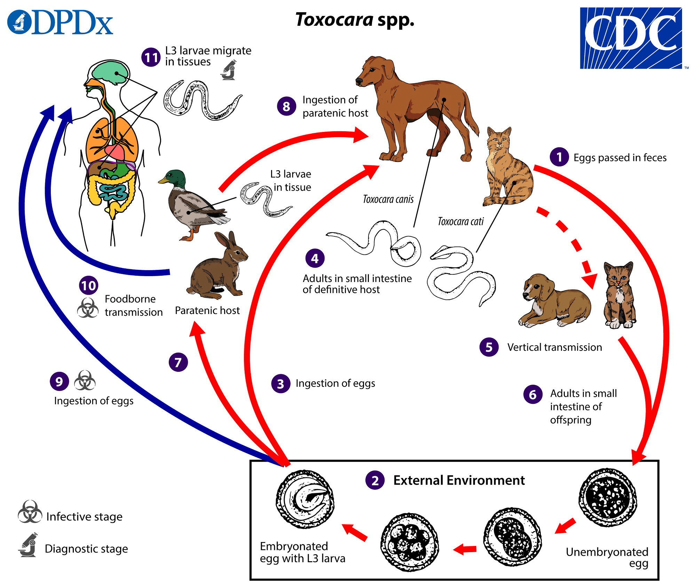
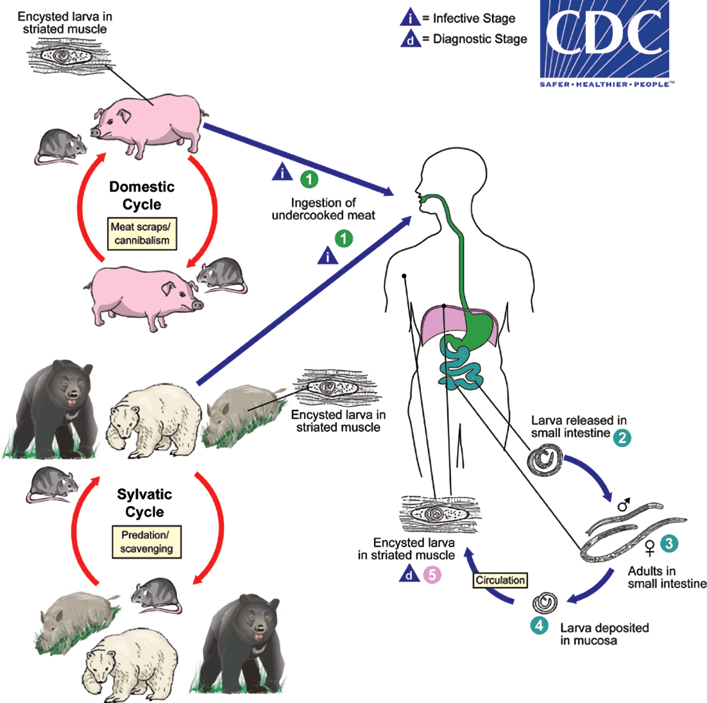

封面
前言
這是一本專門為了臺灣醫學生而生的書，我常常感受到共筆的美好，也感受到共筆的災難，動用了系上一伴的人，卻浪費了許多人的時間、人力。 共筆本身不該這麼可怕的，一群學生因為書太多，於是互相合作，然而理念雖然美好，事實往往相反。 事實是，有的人擺爛，有的人積極向上，大部分的人則不太重視這一切，因為自己本來就有實力，不需要仰賴這麼一個"共筆"。
再者，各校各系發展了各系自己的共筆，面對段考合情合理，面對國考卻顯得不太合理，很多人都還是會念趙神的解剖或是各科各路神人整理的筆記，但好像沒有一個整合性的共筆出現，自己以前讀資訊，對資訊特別念舊(X，於是出現了這個計畫，當作自己的筆記，也希望能把各路蒐集到的資料統合進一本裡面。
最後預祝各位考運順利:)
解剖學
胚胎及發育生物學
組織學
生理學
生物化學
總論
醣類
蛋白質
脂質
脂肪酸氧化
脂肪酸合成
三酸甘油酯 Triacylglycerols 的合成
甘油磷脂 Glycerophospholipids 的代謝路徑
神經脂質 Sphingolipids 的代謝路徑
基因
微生物
總論
微生物的發現與理論
雷文霍克 Antony van Leeuwenhoek 1632~1723
第一位精準觀察並描述微生物的人，當時他將這些生物稱為 Animalcules
巴斯德 Louis Pasteur 1822~1895
微生物學之父：疾病生源說 ( Germ Theory of Disease )
巴斯德殺菌法 Pasteurization
- 用 60~90 °C 的短暫高溫處理，能殺死食物中大部分的微生物，延長保存期限
- 不影響食物原先的風味，用於鮮奶、酒類、果汁
鵝頸瓶實驗
- 將肉湯裝入鵝頸瓶中並將其煮沸殺死微生物
- S 形瓶頸的彎曲處能阻擋帶有微生物的灰塵，只要不切斷瓶頸，肉汁就不會腐敗
- 推翻無生源論 ( Abiogenesis )，確立「生命必源自生命」的想法
柯霍假說
柯霍與他的老師亨勒 ( Jacob Henle ) 共同提出
- 起初用遇說明炭疽桿菌 ( Bacillus anthracis )與炭疽病 ( Anthrax ) 之間的關係
- 後來衍生出微生物致病的理論，人們也開始思考如何以清除病原體 ( Pathogens ) 來解決疾病
假說內容
- 此種病原體必定存在於所有患病個體內，但不存在於健康個體
- 可以從患病個體中分離出此種病原體，並在培養基中獨立培養
- 將培養出的病原體植入健康個體後，可以造成相同的疾病症狀
- 能從被植入病原體的個體體內，以相同方式再次分離出相同的病原體
假說缺陷
- 有些帶原者並不會出現症狀，所以柯霍將第一條的後半刪除
- 霍亂、結核病等疾病，未必能在不同個體上表現相同病症，並不符合第三條原則
影響
- 科學家得以發現大多數重大傳染病之致病因子 ( Causative Agent )
- 促成許多疾病的預防和治療。如下圖：1900 年對比現代，傳染病致死比率大幅下降
//圖
微生物防治
化學治療的演進
| 姓名 | 年代 | 貢獻 |
|---|---|---|
| Paul Ehrlich | 1910 | 製造出化學抗菌劑 Salvarsan 606，有效治療梅毒 ( Syphilis ) |
| Alexander Fleming | 1928 | 發現並提煉出第一種抗生素盤尼西林 ( Penicillin ) |
| Gerhard Domagk | 1935 | 發現磺胺類藥物 ( Sulfanilamide )，是第一種人工合成抗菌藥物 |
| Selman Waksman | 1943 | 分離出鍊黴素 ( Streptomycin )，成功地治療肺結核 ( TB, Tuberculosis ) |
| John Franklin Enders | 1946 | 現代疫苗之父，培養小兒麻痺病毒 ( Poliomyelitus Viruses ) 促成疫苗研發 |
抗生素抗藥性 ( Antimicrobial Resistance )
- 抗藥性：可見於細菌、真菌、病毒和寄生蟲，最常見於大腸桿菌
- 近年來發現並濫用各種抗生素，加上廣泛應用在畜牧及醫療業，造成抗藥性問題
- 交通愈發便利，細菌透過質體交換，大幅增加族群中帶抗藥性的細菌，加劇了抗藥性問題
- 目前已發現全抗性抗藥性的超級細菌 ( Superbug )，即臨床的抗生素皆無效，英國在 2012 年提出如不重視此問題，2050 年後死於傳染性疾病的人將多於癌症 ( 回歸沒有抗生素的年代 )
- 解決方案
- 在自然環境培植微生物提取新型抗生素
- 尋找新療法，例如噬菌體
- 研發疫苗
微生物的重要性
- 人體內及表面的微生物相 ( Microbiota )
- 人體內及表面的微生物數量是人體總細胞的三倍、基因量則是超過人體基因數 100 倍
- 可對抗病原體入侵、在腸道協助合成維生素B、K
- 不同個體與不同身體部位的微生物組成差異相當大
- 人體微生物群系計畫 ( HMP, The Human Microbiome Project )：人體基因定序完成後，開始研究健康個體內微生物群系 ( Microbiome ) 的基因組成
- 現代生物科技及重組 DNA 技術：多為利用微生物特有的酵素進行，如體外核酸剪接
- 回收重要元素 ( 如C、N、P、S )：如在土壤中的微生物
- 生物降解 ( Bioremediation )：如汙水處理、使用微生物移除石油油污
- 病蟲害的防治：如利用微生物減低農作物蟲害
微生物相與微生物群系
微生物群系 ( Microbiome ) 指的是存在某個環境中的微生物相 ( Microbiota ) 的基因體
微生物群系 ( Microbiome ) 的分類
- 核心微生物群系 ( Core Microbiome )：不同個體的同一部位共有的微生物種類 ( 超過95% )
- 共有種類數量：嘴 >鼻 > 腸胃 > 皮膚 > 陰道
- 對代謝及免疫非常重要
- 次級微生物群系 ( Secondary Microbiome )：不會廣泛共有於不同個體的微生物種類
- 協助各種器官的功能執行
- 組成種類不盡相同 ( Taxonomic Diversity )，但整體的功能很類似 ( Functional Redundancy )
微生物相 ( Microbiota ) 的演化
- 下圖左半：共生微生物鋪滿腸道，形成健康的微生物相 ( Healthy Microbiota )
- 第 1 層防禦：微生物耗盡營養物質，讓外來病菌缺乏營養，沒有空間生存 ( 競爭關係 )
- 第 2 層防禦：刺激腸道細胞分裂或刺激自身免疫系統
- 下圖右半：共生微生物缺乏或不平衡 ( Depleted Microbiota )，上述功能消失，病原體得以入侵
- 微生物相會受飲食和生理狀態影響
//補圖
生物群系在疾病中扮演的角色
- 柯霍氏假說 ( Koch Postulates ) 中提出，一種有機體微生物會造成一種疾病
- 現代觀點則較傾向認為，菌落 ( Community of Organisms ) 的失衡 ( Dysbiosis ) 會造成疾病
//補圖
相關疾病的診斷以及治療方法
- 困難梭狀芽孢桿菌腸炎 ( Difficile Colitis )，約20～60％的患者在接受了抗生素治療之後會復發
- 替代方法：糞便菌落群移植 ( Fecal Microbial Transplantation )，俗稱的吃大便療法，透過移植正常人的腸道菌叢生態，讓患者的腸道菌像恢復平衡
- 在其他疾病上可能有意外的療效，如腸道疾病、癌症、肥胖和情緒都與腸道的微生物組成有關
益生菌 ( Probiotics )
- 常見的益生菌有：比菲德氏菌 ( Bifidobacterium )、乳酸桿菌 ( lactobacillus )、酵母菌 ( Yeast )
- 對於療效目前仍然存在爭議，不過仍有不少證明其有效的科學證據
細菌
分類
三域分類法：真細菌 ( Bacteria )、古細菌 ( Archaea )、真核細菌 ( Eucarya )
微生物 ( Microbes / Microorganism ) 大小比較
- 藻類 > 原生生物 > 真菌 . 細菌 > 病毒
- 細菌大小大多以微米表示，人類視覺極限約 0.2mm
- 較大細菌 ( 0.1～0.3 mm )：納米比亞氏嗜硫珠菌 ( Thiomargarita )
- 較小細菌 ( 0.1～0.2 μm )：砂眼衣原體 ( Chlamydia )、立克次體 ( Rickettsia )，接近病毒大小
巨觀 ( Macroscopic Appearance )：依培養基上觀察到的特徵分類
- 依菌落顏色、大小、形狀、味道
- 不同微生物在不同養分或生長介質中，表現出不同生長特徵
微觀 ( Microscopic Appearance )：依顯微鏡下觀察到的特徵分類
- 依細菌形狀、大小、細菌個體間的排列做區分
- 形狀
- 球菌(Coccus)
- 桿菌(Bacillus)
- 球桿菌(Coccobacillus)
- 梭菌(Fusiform bacillus)
- 弧菌(Vibrio)
- 疏螺旋菌(Spirillum)
- 密螺旋菌(Spirochete)
- 形狀
- 格蘭氏染色(Gram Staining )
- 分類：兩者有生理差異，在決定細菌感染的治療方式及藥物選擇上有相當大的助益
- 革蘭氏陽性菌 ( +：Gram-positive )：細胞壁較厚，染色後呈紫色
- 格蘭氏陰性菌 ( -：Gram-negative )：細胞壁較薄，染色後呈粉紅色
- 陰性菌細胞壁較薄，又比陽性菌多了一層外膜 ( Outer Membrane )，Crystal Violet 會被乙醇 ( Alcohol )或丙酮 ( Acetone )脫色，使用Safranin Red 後呈粉紅色
- 格蘭氏染色法過程
- 詳細步驟
- 將細菌固定於玻片上
- 初染劑：用 Crystal Violet 染第一次
- 媒染劑：用 Gram Iodine，和初染劑反應，增加染劑的附著力，幫助染劑固定於細胞上
- 脫色劑：用乙醇或丙酮洗去多餘染劑，並溶解細胞中的脂質
- 附染劑：用 Safranin，將被脫色的細菌 ( G- )染成紅色，以便觀察
- 分類：兩者有生理差異，在決定細菌感染的治療方式及藥物選擇上有相當大的助益
- 依細菌特性分類
- 生物型 ( Biotype )：依照新陳代謝特性
- 氧氣或特定營養物的需求
- 碳水化合物或氮的利用方式
- 產生特定代謝物和酵素
- 蛋白質圖譜
- 藉由質譜得到的訊號與資料庫比對
- 血清型 ( Serotyping )：依照抗原性 ( Antigenicity )，即打到其他動物體內可否產生抗體
- 區別同種細菌的不同品種
- 鑑定難以培養的或危險的細菌
- 基因型 ( Genotype )：可快速鑑定成長緩慢的細菌
- 利用DNA 雜交 ( 設計與某段序列互補的序列作為探針 ) 與 PCR 放大後進行檢測
- 分析 rRNA ( 16S Ribosomal RNA Sequence )，此序列細菌大多都有且每種排序不同，辨識度高
- 分析染色體上 DNA 片段
- 生物型 ( Biotype )：依照新陳代謝特性
結構
原核生物
- 大小多介於 0.5～3 μm，不具細胞核及膜狀胞器，DNA 裸露在細胞質中
- 染色體多為單套 ( Haploid )、雙股、環狀DNA，可能還有環狀質體DNA ( Plasmid DNA )
- 基因體大小：0.5～13 Mb ( Million Base Pairs )
- 核糖體為 70S ( 50S+30S )，S 為沉降係數，等效數值不等於相加
- 行無性生殖，但可藉由水平轉移傳遞遺傳訊息
真核生物
- 大小約 10～100 μm，具膜狀胞器，DNA 包覆在核膜中
- 染色體多對雙套 ( Diploid )，只有酵母菌有質體
- 人類基因體大小：2900 Mb
- 核糖體為 80S ( 60S+40S )
- 藉由有性生殖交換遺傳訊息
細菌內部結構
染色體 ( Chromosome )：染色質經高度摺合的區域，又稱擬核區 ( Nucleoid Region )
核糖體 ( Ribosome )：經 30S 和 50S 兩個次單元組合形成 70S 的核醣體
內含體 ( Inclusion Body )：儲存能量或是一些特殊物質
- 異染體 ( Metachromatic Granules / Volutin )：儲存磷酸鹽
- Polysaccharide Granules：儲存能量
- Lipid Granules：儲存能量
- Sulfur Granules：儲存能量
- 氣胞 ( Gas Vacuoles )：調節浮力
- 磁小體 ( Magnetosome )：分解雙氧水、引導細胞對應地磁移動，可作為藥物載體
質體 ( Plasmid )
細胞質液 ( Cytosol )
細胞膜 ( Plasma Membrane )
- 組成：雙層磷脂質，大部分缺少固醇類 ( Sterol )，但具有相似物質藿烷類 ( Hopanoid )
- 功能：
- 防水
- 感知外界
- 物質交換
- 電子傳遞鏈
- 分泌作用
細胞壁 ( Cell Wall )
- 組成：兩種肽聚醣 N-Acetylmuramic Acid ( NAM 和 N-Acetylglucosamine ( NAG ) 交錯排列，再由小胜肽鏈將肽聚醣 ( Murein / PDG, Peptidoglycan ) ) 連結在一起
- 功能：
- 具有通透性
- 維持彈性
- 轉肽作用 ( Transpeptidation Reaction )
- 側支與側支胜肽鏈的鍵結作用，通常是在 NAM 上的 Lysine 與反向的胜肽連結
- 藥物抑制：妨礙此進行，使細菌細胞壁鬆散進而死亡
- β-lactam 類抗生素：如青黴素
- 萬古黴素 ( Vancomycin )：會接在頂端胺基酸以阻礙轉肽作用
格蘭氏菌的細胞壁比較
- 格蘭氏陽性菌 ( G＋ )
- 較厚的肽聚醣中鑲嵌化學物質
- 如金黃色葡萄球菌的肽聚醣中鑲嵌壁磷酸 ( Teichoic Acid ) 和脂壁磷酸 ( Lipoteichoic Acid )
- 格蘭氏陰性菌 ( G－ )
- 細胞質膜 ( Cytoplasmic Membrane )：與細胞質接觸
- 胞質間隙 ( Periplasmic Space )：位於兩膜之間，抗生素分解酶的作用位置
- 外膜 ( Outer Membrane )：與外界接觸，其上有脂多醣 ( Lipopolysaccharide )
- 脂多醣 ( LPS, Lipopolysaccharide )：與內毒素 (Endotoxin )有關
- Lipid A：最主要對人及動物產生內毒素的結構
- Core
- 短鏈醣類，不同菌種組成醣類會稍有不同
- 其中一種特殊的醣類為 2-Keto-3-Deoxy-Octanoate ( KDO )
- O-Antigen：跟環境接觸
- 為重複串接的短鏈醣
- 具抗原性，可做血清學的測試
- 脂多醣 ( LPS, Lipopolysaccharide )：與內毒素 (Endotoxin )有關
無法使用革蘭氏染色法區分
- 細胞壁成分非肽聚醣
- 如分枝桿菌屬的肺結核分枝桿菌，其細胞壁為 Mycolic Acid
- 可改使用抗酸性染色法 ( Acid Fast )
- 缺乏細胞壁
- Mycoplasmas：具有固醇 ( Sterol )以增加穩定性
- Chlamydia：格蘭氏陰性菌，但不含PDG
- Protoplasts：細胞壁受損的細菌在等張溶液中並不會破裂，再回到充滿營養的地方便能存活
細菌外部結構
醣盞 ( Glycocalyx )
- 大部分由醣組成，少部分為蛋白質
- 依厚度跟黏性區分
- 莢膜 ( Capsule )：較緊密
- 黏液層 ( Slime Layer )：較鬆散
- 功能
- 黏附到其他細菌或宿主，與生物膜 ( Biofilm ) 形成有關
- 抗原性 ( Antigenic ) 差，能保護細菌，抗吞噬細胞的吞噬作用
鞭毛 ( Flagella )
- 功能：像推進器，讓細菌能運動
- 組成：由鞭毛蛋白次單元 ( Flagellin Subunits ) 組成，並有三部分
- Filament：由鞭毛蛋白 ( Flagellin ) 組成的細長螺旋構造
- Hook：彎曲的鞘
- Basal Body：由環形構造堆疊而成，並且鑲嵌在細胞壁
- 不同的名稱：鞭毛數不同
- Monotrichous：一條鞭毛
- Lophotrichous：很多條鞭毛
- Peritrichous：表面佈滿鞭毛
- 軸絲 ( Axial Filament )：使螺旋體門 ( Spirochaetes ) 的細菌像蛇一樣的移動方式
- 表現抗原性 ( Antigenic )
- 趨化作用 ( Chemotaxis )：尋找營養或是遠離毒素，解釋為什麼細菌要移動
纖毛 ( Fimbriae ) 和線毛 ( Pili ) -纖毛為從細胞膜延伸出的像髮的絲狀構造，比鞭毛短，其中纖毛數量較多且通常較線毛長
- Pili 主要出現在格蘭氏陰性菌 ( Gram - )上，由 Pilin Subunits 組成，並且幫助細菌黏附在人類細胞上引發感染
- 性線毛 ( Sex Pilus )：於接合傳遞 ( Conjugation ) 中連接兩交配中的細菌 ( Male：Donor / Female：Recipient )，使基因能夠水平傳遞，Sex Pilus 只能在格蘭氏陰性菌上找到
細菌複製 ( Bacterial Replication )
- 細菌以二分裂法 ( Binary Fission ) 進行複製，並遵循以下步驟
- 延長細胞且複製DNA
- 延伸到兩倍菌體長度時，細胞壁和細胞膜往中央凹陷，準備分裂
- Cross-wall ( 中央隔板 ) 形成並完全分離兩組DNA
- 菌體完全分離
- 細胞壁合成 ( Cell Wall Biosynthesis )
- 球狀菌
- 在中央形成新的肽聚糖，形成中隔 ( Septum )
- 最後形成兩個子細胞，子細胞由一新一舊兩個半球組成，參考圖A
- 桿菌
- 在分裂期前的生長期，在細胞側邊就會形成新的細胞壁，但不會在兩極形成，被認為是由MreB Homologues ( 一種肌動蛋白 ) 的位置決定
- 分裂開始時，從中央開始做肽聚糖的細胞壁合成，並且由 FtsZ 蛋白聚合形成Z ring，作為分裂位
- 最後分離產生一個新的極 ( Pole ) 和一個舊的極 3.細菌孢子 ( Bacterial Spores )
- 球狀菌
- 有些細菌能夠形成孢子度過惡劣的環境，保護遺傳物質，例如：梭菌屬 ( Clostridium )
- 過程
- 遺傳物質複製後移到一端
- 細胞膜及細胞壁凹陷形成隔板，並使細胞質中充滿 Dipicolinic acid 防禦熱、脫水、放射線以及化學物質以保護遺傳物質
- 形成雙層肽聚糖膜的孢子並釋出
- 遇到合適環境時，出芽 ( Germination ) 重新生長為細菌
細菌的生長
細菌的生長指的並非單一個體的成長，而是指整個細菌群落中細菌數量或是整體重量的增加
影響生長的因素
- 物理因子
- 溫度：多數致病菌屬常溫菌 ( Mesophiles )；嗜熱菌 ( Hyperthermophiles )則在海底火山附近
- pH 值：多數細菌生長在中性環境，部分細菌如乳酸菌適合酸性環境，霍亂弧菌適合鹼性環境
- 滲透壓：細菌於不適合的滲透壓中無法生存，應用在食物保存上
- 化學因子
- 氧氣
- 絕對需氧菌 ( Obligate Aerobe )：只存在有氧環境中，具備超氧化物岐化酶 ( Superoxide Dismutase, SOD ) 作為抗氧化劑、過氧化氫酶 ( Catalase ) 來消除自由基
- 兼性厭氧菌 ( Facultative Anaerobe )：傾向有氧，但無氧也能生存，一樣有SOD 和 Catalase
- 耐氧菌 ( Aerotolerant Anaerobe )：對氧氣濃度無要求
- 絕對厭氧菌 ( Strict Anaerobe )：只在無氧環境生存，腸道中很多
- 微需氧菌 ( Microaerophile )：在特定濃度才能存活，如：胃幽門桿菌
- 氧氣
細菌生長曲線 ( Bacterial Growth Curve )
- 延遲期 ( Lag Phase )：細菌生長初期需適應新環境，因此曲線改變幅度不大、變化不明顯
- 指數生長期 ( Log Phase/Exponential Phase )：適應環境後快速以二分裂 ( Binary Fission )生長，分裂所需的時間則依菌種有所不同，如大腸桿菌為 20 分鐘左右
- 穩定期 ( Stationary Phase )：養分消耗，細菌死亡率等於新生率，趨向平衡。此時容易累積突變
- 死亡期 ( Death Phase )：養分消耗完畢，細菌死亡
生物膜 ( Biofilm )
- 一群細菌附在固態物體上 ( 如器官、管腺 )，釋放多醣體、蛋白質等形成胞外聚合物 ( EPS,Extracellular Polymeric Substance )，也會釋放黏性物質加強黏著力和吸引更多不同菌種的細菌附著
- 特殊的微環境使細菌產生生理特性的改變，如抗紫外線、抗藥性等
- 細菌即使黏附在生物膜上仍可剝離，導致再度感染
細菌的代謝
細胞壁由肽聚糖 ( PDG, Peptidoglycan ) 組成，以兩種糖衍生物：NAG ( N-Acetylglucosamine ) 和 NAM ( N-Acetylmuramic Acid ) 交替相連形成的多醣鏈做為骨架，兩者由肽鍵橫向連結
ATP 在分解和合成中的角色
- 分解作用 ( Catabolism )：大分子降解為單元體所產生的能量將促成 ATP 的形成
- 合成作用 ( Anabolism )：單元體利用 ATP 的能量聚合為大分子
x磷酸化 ( Phosphorylation ) 生成 ATP 的方法
- 受質階層磷酸化 ( Substrate-level Phosphorylation )：Pi 直接自供應者轉給ADP，如糖解作用
- 氧化磷酸化 ( Oxidative Phosphorylation )：質子動力勢 ( Proton Motive Force ) 驅動。H+ 順濃度梯度跨膜內流會產生能量合成ATP，是最主要產生ATP 的方式，如電子傳遞鏈
- 光合磷酸化 ( Photophosphorylation )：與氧化磷酸化類似，但必須靠光能驅動，如光合作用
糖解作用
- 有氧：細菌與真核細胞的差異
- 電子傳遞鏈位置：細菌的電子傳遞鏈位於細胞膜上、真核細胞則位於粒線體内膜上
- ATP 合成數量：細菌2 H+ 合成 1 ATP、1 NADH 產生 3 ATP、1 FADH2 產生 2 ATP。真核細胞則是 4 個 H+ 合成一個ATP、1 NADH 產生 2.5 個 ATP
- 無氧
- 丙酮酸不進入檸檬酸循環而是還原成其他化合物；電子的最終接收者並非氧氣，而是無機鹽類
- 消耗一 NADH 產生的 ATP 較少
- 人類的腸胃道裡有許多進行無氧呼吸的兼性厭氧菌 ( Facultative Anaerobic Bacteria )，如有微生物能發酵產生 Butyric Acid，調節 T 細胞的分化，進而調節免疫反應
- 工業應用：乳酸菌產生乳酸；酵母菌產生酒精
- 其他大分子物質的代謝
- 醣類代謝為中央代謝的主軸，因其他物質在代謝的過程中都會形成醣類代謝的中間產物
- 蛋白質或肽類：經蛋白酶或肽酶分解成胺基酸，再轉化成丙酮酸或 TCA Cycle 的中間產物
- 脂類：經脂酶分解成甘油和脂肪酸，甘油轉化成 GAP；而脂肪酸 β-oxidation 轉化成 Acetyl-CoA
能量的利用
細胞膜上的主動運輸 ( Active Transport )
- 鞭毛運動
- 生物合成 ( Biosynthesis )：簡單物質在生物體內經酶催化後轉變為更複雜物質的多步驟過程
- 醣類的生物合成
- 肝糖：細菌在G6P 上加ATP 形成ADPG；動物則加上UTP 形成UDPG 來聚合成肝糖
- 肽聚醣 ( Peptidoglycan )
- F6P＋UTP → UDPNAc ( UDP-N-Acetylglucosamine ) → Peptidoglycan
- UDPNAc 為 UDP-NAG 與 UDP-NAM 交錯排列的產物
- 醣類的生物合成
基因
細菌基因體與染色體
遺傳為性狀傳遞的過程，而性狀的前驅則為基因
基因體 ( Genome )：一個生物所有遺傳物質的總和；以細菌來說基因體包括染色體與質體 細菌染色體的特徵：最常見是單套 ( One Copy/Haploid )、封閉環狀 ( Closed + Circular )、雙股螺旋 ( dsDNA ) 的染色體，通常與細胞膜相連接，例外：線形染色體、帶多個環形的染色體
擬核區 ( Nucleoid )
- 染色體在細胞質內並非散開的，而是將細菌染色體濃縮
- 佔細菌細胞質很大一部分
- 主要成分為DNA 分子 ( 佔60％ )，其餘還有少量蛋白質 ( 主要是轉錄因子蛋白質，非組蛋白，但功能近似組蛋白，使 DNA 分子維持超螺旋結構 )及 RNA 分子 ( 主要是mRNA )
質體 ( Plasmid DNA )
- 染色體外的核酸物質，與染色體最大的差別在於即使失去也不會死亡
- 小型、雙股螺旋的環形DNA 分子，比染色體小 ( 染色體以百萬鹼基為單位，質體多以千為單位 )
- 質體的複製不被染色體影響 ( 完全不同步 )，大小、套數、基因組成有許多種類，屬於高度變異
- 革蘭氏陽性和陰性菌都有質體，其中G(-)中的質體複雜程度較高，且一隻細菌可能同時含有多種
- 功能
- 基因轉殖之載體 ( Vector )
- 攜帶並散播抗藥性基因 ( Antibiotic Resistance Gene )
- 產生致病因子 ( Pathogenic Factors )，如炭疽桿菌的外毒素 ( Exotoxins )
- 製造還原酶 ( Reductase Enzyme )，讓微生物不受環境中重金屬 ( 如汞、銀 )影響
- 形成線毛 ( Pili/Fimbriae )，用來黏附在宿主或其他細菌身上
細菌遺傳訊息的利用方式
基因複製 ( Replication )
- 基本化學原理與真核生物一樣
- 透過旋轉酶 ( Gyrase ) 及解旋酶 ( Helicase ) 解開 DNA 的雙股螺旋結構 ( Gyrase 打開超螺旋，減少結構上的壓力，Helicase 解開雙螺旋 )
- 環狀 DNA 僅有一個固定的複製起始點 ( OriC, Replication Origin )，是一個特殊序列，含氮鹼基 A、T 比例較高。 ( 此區域常常需要解旋，而兩個氫鍵連接的 A＝T 更容易打開 )
- 起始蛋白 ( DnaA ) 辨識並與起始點結合，把雙股拉開，使鹼基裸露，再透過 DNA 聚合酶複製
- 合成結束後兩個染色體分子環套環，因此需要再分離
- 拓樸異構酶 Ⅳ ( Topoisomerase Ⅳ )：Topo IV 可以將雙股 DNA 切開，並把 DNA 拉出來，將兩個環狀DNA 分離，再將切開的位置黏合
- XerCD 重組酶：XerCD 重組酶可以辨識雙股DNA 上面的dif ( 下圖框框處 ) 序列，進行單股DNA 的交換，形成兩個獨立的環狀染色體
/////
- 半保留複製，過程中雙股同時複製，但由於DNA 分子延長具有方向性 ( 5’ → 3’ )，故產生領先股 ( Leading Strand )及延遲股 ( Lagging Strand )的差異 ※補充：雖有領先股及延遲股的差異，但複製時兩股的速度一致，且位置都在複製叉附近
- 領先股 ( Leading Strand ) 的延長：解旋後，對應的模板股為3’端到5’端，故新複製的DNA可以順著解旋方向，由DNA 聚合酶 3 號 ( DNA Polymerase Ⅲ )進行連續性的串接
- 延遲股 ( Lagging Strand ) 的延長：解旋後，對應的模板股為5’端到3’端，故而會產生許多遠離複製叉 ( Replication Fork ) 的新股。複製時，會先以引子酶 ( Primase ) 合成引子 ( RNA 片段 )，再透過 DNA 聚合酶3 號延長向3’延長 ( 約1 kb )，由DNA 聚合酶1 號去除引子，補上 DNA，最後再由 DNA 連接酶 ( DNA Ligase ) 連接岡崎片段 ( Okazaki Fragment )
//////
基因表現 ( Expression )
中心法則：DNA 轉錄 ( Transcription ) 成RNA，RNA 轉譯 ( Translation ) 成蛋白質
基因為能被生物體製造出有功能的產物之 DNA 片段。基因表現則是透過轉譯出蛋白質、RNA，來維持生物體的機能
原核生物的基因結構
- 有90％以上的核酸訊息可以做出最終產物
- 不具有內含子 ( Intron )，僅有外顯子 ( Extron )
- 轉錄及轉譯會同時發生。且細菌的一條 RNA 上有多個轉譯起始點，合成蛋白時，可見 RNA 上附著許多核醣體，稱為多聚核醣體現象 ( Polyribosome )，此乃細菌能生長快速的原因
順反子 ( Cistron )：又稱為作用子，即一段能轉譯出功能性蛋白質的RNA
- 單順反子 ( Monocistron )：一條mRNA 轉譯出一段多肽，常見於真核生物
- 多順反子 ( Polycistron )：一條mRNA 轉譯出超過一條多肽，常見於原核生物
- 概念來自遺傳學中的順反重組試驗 ( 為了確定交換片段究竟在一個基因內還是屬於兩個基因的試驗 ) 簡言之，順反子在一定條件下與基因同義
操縱組 ( Operon )：執行同一個代謝路徑的基因，於染色體上接續排列，受到同一操縱子調控，mRNA 可被轉譯成許多蛋白質，共同完成某代謝路徑
- 操縱子 ( Operator )：一段 DNA，為調節蛋白或抑制蛋白的接合位，下游轉錄作用的開關
- 啟動子 ( Promoter )：一段 DNA，為 RNA 聚合酶的接合位，轉錄的起始點
- 結構基因 ( Structural Gene )：可以被轉錄、轉譯出蛋白質並表現遺傳訊息的基因
非編碼基因：最終產物是RNA
- Ribosomal DNA：Ribosomal DNA 轉錄出Ribosomal RNA，與蛋白質結合，形成核醣，Ribosomal RNA 在細菌中高度保留，常見5S、16S、23S。多為多套體 ( Multiple Copies )
- Transfer DNA：轉錄出 Transfer RNA，將核酸訊息翻譯成胺基酸，並將胺基酸帶至核醣體串接
- Noncoding DNA：不被轉譯出功能性蛋白，但可行轉錄後調節 ( Post-transcriptional Control )，常見作用點會結合在 5’UTR ( Untranslated Region )及 3’UTR處，原核及真核生物皆具有 Noncoding RNA
調節
- 細菌60～80%的基因是持續表現且不受控制的，如糖解的酵素
- 細菌的基因調控通常發生在轉錄之前 ( Pre-transcriptional Control )
- 基因的表現與否是以被轉錄出的 mRNA 多寡來判斷
- 轉錄前的調控機轉
- 誘導型 ( Induction )：基因關閉，需要使用時才會被開啟
- 平常由調節基因 ( Regulatory Gene )製造的抑制蛋白 ( Active Repressor )會與操縱子結合，使操縱組的轉錄作用無法進行
- 當環境中有誘導物 ( Inducer )可和抑制蛋白結合，使其失去活性而無法與操縱子結合，便可轉錄出下游基因
- 當誘導物存在時，被轉錄轉譯出的酵素稱為誘導酵素 ( Inducible Enzyme )
- 抑制型 ( Repression )：基因開啟，環境中存在有輔抑制物 ( Co-repressor )才會被關閉
- 平常由調節基因製造的抑制蛋白不具活性，無法與操縱子結合，下游基因可持續被轉錄
- 當環境中有輔抑制物時，輔抑制物會與抑制蛋白結合，使其具活性，並與操縱子結合，而抑制下游基因轉錄
- 輔抑制物常是該操縱組被表現後反應生成的最終產物，過多時便會成為輔抑制物
基因重組 ( Recombination )
一般性重組 ( General Recombination )
- 同源性重組 ( Homologous Recombination )：原核與真核生物皆存在
- 前提：兩條序列高度相似 ( 不一定為同源染色體 )的雙股DNA
- 過程
- Donor DNA 的其中一股DNA 骨架上糖磷鍵結斷裂，形成一個缺口 ( Nick )
- 裸露出的一條單股DNA 游離出來形成侵略股，與RecA Protein 結合後，侵略其互補序列
- 透過內切酶和連接酶取代並交換鹼基，因為兩個DNA 序列幾乎一樣，所以上方的 DNA 可以配對到下方 DNA 的某一個模板上，進而將下方 DNA 往上推和上方 DNA 做配對
- 由降解酶把兩邊打開後再黏好，產生DNA 局部單股交換 -意義：讓受損的染色體得以利用與自身相似的另一條染色體來進行DNA 修復
- 非同源重組 ( Non-homologous Recombination )：真核生物較常見
- 不需要兩個幾乎一樣的DNA
- 當其中出現DNA 斷裂時，會隨便找另一個DNA 分子接上去
- 對兩條參與重組的DNA 相似度要求低，其機制、參與酵素都和同源性重組有極大不同
專一性位置重組 ( Site-specific Recombination )：發生於固定位置
- 形成一個單股DNA 交換，可能會讓一個環型DNA 分子插入或解開
- 需要特殊的重組酶 ( Recombinase )，重組酶會認定特定序列產生重組
遺傳訊息的變異 ( Change of Genetic Material )
自發性突變 ( Internal )v.s.外源性突變 ( External )：依照突變原因進行分類
| 種類 | 自發性突變 ( internal ) | 外源性突變 ( external ) |
|---|---|---|
| 說明 | 受內部因素影響 ( spontaneous ) | 受外在突變劑 ( mutagens ) 影響 |
| 原因 | DNA 修補或進行複製時發生錯誤 | 物理性：紫外光、X-ray 等 |
| 增變基因 ( Mutator Gene ) | 化學性：DNA-reactive chemicals、鹼基類似物 ( Base Analog )，造成Missing Cooperation、插入劑 ( Intercalating Agents ) |
物理性UV：歐美國家的人常因照射過多紫外線，易皮膚病變產生黑色素瘤，亞洲地區的人則因為皮膚有保護色而較少案例。紫外光會造成DNA 受損是因為造成兩個鄰近的Pyrimidine 產生共價鍵結，常為兩個Thymine，稱為Thymine Dimer。細菌帶有特殊酵素 ( Photolyase )可運用可見光的能量，化解兩TT 間的鍵結，使DNA 恢復正常
化學性
- DNA-reactive Chemicals：如烷化劑 ( Alkylating Agent )，最毒，作用在鹼基上，使配對原則出錯，如Nitrosoguanidine。DNA 鹼基改變，數目不變
- 鹼基類似物 ( Base Analogs )：跟鹼基長得很像，但配對原則不一樣。DNA 複製時，被用於串接，造成單一鹼基改變。DNA 鹼基改變，數目不變
- 插入劑 ( Intercalating Agents )：長相類似鹼基對，會鑲嵌在鹼基對中間，使DNA 聚核酶多放或少放，此狀況稱作Insertion/Deletion。此情況不同於前兩者是造成DNA 鹼基對數目改變
突變層級
核酸層級突變
- 替代 ( Substitution )蛋白質層級突變
- Transition：嘌呤 → 嘌呤或嘧啶 → 嘧啶，A 和G 換，C 和T 換，結構相似的鹼基交換
- Transversion：嘌呤 ⇔ 嘧啶，結構不相似的鹼基交換，如單環結構換雙環結構
- 插入或缺失 ( Insertion/Deletion )
蛋白質層級突變
- 點突變 ( Point Mutations )：單一鹼基之替換，單一胺基酸受損，產生以下三種情況：
- 沉默突變 ( Silent Mutations )：DNA 鹼基之改變並不影響轉譯出的胺基酸種類，不引起性狀改變，為一種生物保護機制，與Genetic Code 的退化有關。e.g., GAG 和GAA 皆轉譯出Glu
- 錯義突變 ( Missense Mutations )：DNA 鹼基之改變影響了轉譯出的胺基酸種類，e.g., GAG點突變為GTG ( GUG )，原先之胺基酸由Glu 變為Val。最後產生的蛋白質可能改變不大，或者嚴重鉅變，而改變不大的狀況稱作Conservative mutation，例如：胺基酸Val 變成Ala，兩者都是疏水性，對蛋白質性質影響不大
- 無義突變 ( Nonsense Mutations )：DNA 鹼基之改變將原先之密碼子轉為終止密碼子 ( StopCodon )，e.g., GAG 變為TAG ( UAG )，造成轉譯中止，蛋白質截短 ( Protein Truncation )。此突變的影響程度取決於發生的位置，若在胺基酸序列尾端或許影響不大，但嚴重時可能造成無效突變 ( Null Mutation )，產生無功能的基因產物
- 框移突變 ( Frameshift Mutations )：DNA 鹼基之插入或缺失造成解讀框的橫移，此突變將轉譯出無用之蛋白質 ( Null Mutation )
基因交換
垂直性基因轉移 ( Vertical Gene Transfer )：細菌繁殖時，複製母細胞的DNA 轉給子細胞
水平型基因轉移 ( Horizontal Gene Transfer )：同一世代細菌基因轉移，外源DNA 與原DNA 結合，同源重組形成具有新性狀的細菌 ( Transconjugant )，此機制又稱Lateral Gene Transfer ( LGT )
- 轉形 ( Transformation )：細菌從環境中吞入DNA 片段並進行基因重組
- 微生物具勝任性 ( Competence )，能以特殊運輸蛋白運送環境之DNA 片段。若該片段與自身DNA 相似度高，則可進行同源性重組
- Donor Cell 和Recipient Cell 兩者之間並無物理接觸
- 有無勝任性與革蘭氏陽性或陰性無關
- 外來DNA 的大小和狀態、細菌對該DNA 片段的勝任性與環境因素都會影響
- 生物工程會以化學藥劑增加細胞膜之通透性，使其更容易接受外來之DNA
- 接和 ( Conjugation )
- Donor cell 的質體帶有合成性線毛 ( Sex Pili )的基因，性線毛會尋找Recipient Cell 並將兩細菌互相靠近至相接觸，基部的酵素在觸點形成孔洞，使細胞膜和細胞質液融合，單向傳遞DNA 到Recipient Cell，細菌能以此機制獲得具抗生素抗性之基因
- 細胞交配型 ( 性別 )：有接合質體 ( Conjugative Plasmid )為雄性，無則為雌性
- Donor Cell 的質體進行複製和轉移，Recipient Cell 可以變成新的Donor Cell
- 革蘭氏陰性菌不一定有性線毛
- 轉導 ( Transduction )：以噬菌體 ( Bacteriophage ) 作為媒介，將宿主的DNA 運送到另一個細胞
- 噬菌體進入細菌後降解細菌DNA 同時複製自己的核酸，在重新包裹形成新的噬菌體時，意外帶走原先寄生細菌之DNA，再把它帶給下一個感染的細菌
- 一般轉導傳遞 ( Generalized Transduction )：細菌的任何基因都可能不小心被包進噬菌體內，亦即噬菌體可能隨機帶走細菌之基因
- 限制轉導傳遞 ( Specialized/Restricted Transduction )：只有Donor Cell 的某特定基因片段 ( 多為位在插入位附近的DNA 片段 ) 可以被轉送至Recipient Cell，也就是只會帶走特定基因
基因轉位
生物體中的特殊DNA 片段從一處跳至另一處，透過轉位酶 ( Transposase )，由專一性位置重組進行調控
轉位子 ( Transposon/Transposable Element/Jumping Gene )
- 常見於染色體、質體、噬菌體上
- 隨機移動，可以從染色體到質體、質體到質體、質體到染色體、染色體內移動、質體內移動，可能插在同染色體的其他位置，也可能移動至另一條染色體上
- 插入DNA 時可能造成突變，或是改變附近基因的表現
- 大部分無法自行複製，僅有部分在過程中會產生非自發的拷貝 ( Duplication )
- 結構分類
- 插入序列 ( IS, Insertion Sequence )：較簡單的轉位子，中間帶有tnp 基因 ( 一種轉位酶 )，兩端帶有反向的重複DNA 序列
- 複合轉位子 ( Tn, Composite Transposon )：除了tnp 基因外還帶有抗藥性或毒素基因，兩端則有相同的插入序列 ( 可同向或是反向 )
病毒
真菌
免疫學
總論
免疫現指對感染性疾病的保護力
先天性反應 ( Innate Immunity )
特點：
- 反應迅速
- 強度高，為造成強烈發炎反應的重要角色
- 無記憶性、適應性 ( Adaptability )，對於新型病原體不具保護力
種類
- 第一道防線
- 解剖學屏障 ( Anatomic Barrier )
- 皮膚、黏膜...等
- 第二道防線
- 生理學屏障 ( Physiology Barrier )
- 溫度、低pH值
- 化學介質
- 補體 ( Components )
- 細胞激素 ( Cytokines )
- CRP ( C-reactive protein )：由肝臟產生
- 第三道防線
- 吞噬屏障
- 第四道防線
- 發炎屏障
適應性/專一性/後天免疫 ( Adaptive/Specific/Acquired Immunity )
特點：
- 專一性 ( Specificity )：可以高度針對病原
- 多樣性 ( Diversity )：約有30 種不同的免疫反應
- 記憶性 ( Memory )：擁有可活上數十年甚至終身的記憶細胞
- 專業化 ( Specialization )：有專門活化的機制調控
- 自我限制 ( Self-limitation )：可自我關閉免疫系統
- 不對自身反應 ( Nonreactivity to Self )
種類
- 體液免疫 ( Humoral Immunity )
- B細胞 ( B Lymphocyte ) 製造抗體 ( Antibody )，未針對胞外微生物和其毒素的主要防禦
- 細胞免疫 ( Cell-mediated Immunity )
- 由T細胞 ( T Lymphocyte ) 調節，主要針對胞內寄生微生物 ( 如病毒和某些細菌 )
免疫細胞
//補免疫細胞分化圖
先天性免疫 Innate Immune
發炎誘導物 Inflammatory Inducer
- 又稱 PAMP ( Pathogens Associated Molecular Pattern )，能引起免疫反應
受體細胞 Sensor Cell
- 包含巨噬細胞、嗜中性球、樹突細胞等
- 具有 PARR ( Pattern Recognition Receptor )
- PARR 可能在細胞表面或內部，可以專一性地與 PAMP 結合
- 受體細胞不具專一性，但有許多用來傳遞訊息、具專一性的PARR
機制
- 受體細胞透過PARR 辨識出PAMP，釋出細胞激素和趨化因子 ( Chemokines )，啟動發炎反應
- 血管內皮細胞被活化，表現出更多黏附因子 ( Adhesion Molecule )，相對釋出大量趨化激素
- 血管通透性增加 → 紅、腫、熱
- 吸引更多嗜中性球和單核球進行吞噬作用，釋放發炎介質 ( Inflammatory Mediator )→ 痛
自然殺手細胞 ( NK )
- 屬於非專一型的淋巴球 ( Lymphocyte )，針對病毒感染與癌細胞
- 具有CD16
- 與胞毒型T 細胞 ( Cytotoxic T Cell ) 類似但兩者辨識方式不同，胞毒型T細胞辨識MHC及抗原，NK 直接辨識是否具有 MHC I，不具有 MHC I 表示細胞有所改變
後天性免疫 Innate Immune
樹突細胞 ( Dendritic cell )
- 非常強的APC ( Antigen-presenting cells, APCs )
- 連接非專一性與專一性免疫
- 未成熟的樹突細胞吞噬能力極強，接觸並吞噬病原體之後才開始成熟，成熟的樹突細胞吞噬能力下降，透過淋巴管運輸到次級淋巴器官 ( 如淋巴結 )，活化初始T 細胞 ( Naive T Cell )
B 細胞 ( B Lymphocyte )
- B 細胞受體 ( BCR, B Cell Receptor )：B 細胞膜上抗體 ( Ab )，不同B 細胞有不同BCR
- 周圍 B細胞 ( Peripheral B Cell )：可為 IgG、IgA、IgE、IgM 或 IgD
- 小腸黏膜 ( Intestinal Mucosa )B 細胞：IgA
- CD79：異二聚體，由 Igα/CD79a 與 Igβ/CD79b 組成，各單體之胞內區 ( Cytoplasmatic Tail )具有ITAM ( Immunoreceptor Tyrosine-based Activation Motif )，為免疫細胞的重要傳導信號區
- MHC II、CD40：特有於 APC
T 細胞
- 依T 細胞受體 ( TCR, T Cell Receptor )分類
- αβ T 細胞 ( αβ T cell )：由α、β 亞基組成，占比約95%
- γδ T 細胞 ( γδ T cell )：由γ、δ 亞基組成，占比約5%，多出現於腸道黏膜上皮組織
- 初始T 細胞同時具有CD4、CD8 分子，經由一系列作用後形成TH、TC
- TH 依照分泌的細胞激素不同，又可分成TH1、TH2 等
BCR 與TCR 的比較
//比較圖 B 細胞受體 ( BCR, B Cell Receptor )
- 呈Y 字形，左右兩側各由一重鏈 ( Heavy Chain )與一輕鏈 ( Light Chain )組成
- 左右兩側基因組成相同
- 重鏈與輕鏈皆有變異區 ( Variable Region )與恆定區 ( Constant Region )
- 輔助分子 ( Accessory Molecule )：CD79 ( Igα、Igβ )
T 細胞受體 ( TCR, T Cell Receptor )
- 多由α、β 亞基組成 ( 95 % )；少部分由γ、δ 亞基組成 ( 5 % )
- α、β 亞基與輕重鏈類似，light chain類似α、heavy chain連結 β
抗原表位 ( Epitope /Antigenic Determinant )：抗原表面結合抗體的部分
B epitope ( B細胞可以接受的抗原 )
- 構型表現
- BCR 接合抗原的立體結構，不限定抗原的種類，只要能接上去就好。
- 類似鑰匙 ( 抗原 ) 跟鎖 ( BCR )，鑰匙不限定材質，只要插的進去就好
T epitope
- 線性表現
- TCR接受生肽鏈 ( epitope peptide )
- 類似項上人頭，盤子不用是人頭的形狀 ( MHC不跟抗原太大專一性 )，結構則類似大亨堡的熱狗和麵包
- 一定得是蛋白質 ( 需要切碎 )
免疫器官
群落剔除 ( Clonal Deletion ) 與株系選擇 ( Clonal selection )
群落剔除 ( Clonal Deletion )
- 在初級淋巴器官進行
- 負向選擇
- 又稱中樞耐受 ( Central Tolerance ) 剔除有可能辨認自身抗原的淋巴球以避免攻擊自己的細胞
株系選擇 ( Clonal selection )
- 在次級淋巴器官進行
- 正向選擇
- 成功配對APC 所呈現之抗原的淋巴球才會成為作用細胞 ( Effector Cell ) 並增生
初級淋巴器官
- 淋巴球發育成熟之處，進行群落剔除 ( Clonal Deletion )，形成初始淋巴球 ( Naïve Lymphocyte )
- 胎兒肝 ( Fetus Liver )：胎兒B 細胞發育處
- 骨髓 ( Bone Marrow )：B 細胞發育處
- 胸腺 ( Thymus )：T 細胞發育處，青少年時期活動最旺盛
次級淋巴器官 ( Secondary / Peripheral Lymphoid Organ )
- 主要負責產生後天免疫反應，並提供連結血液循環和淋巴循環的環境
- 進行株落選擇 ( Clonal Selection )
- 捕捉血液中的外來抗原，讓成熟淋巴球能與抗原反應
- 依照有無明顯分區分為兩類
無明顯分區
MALT ( Mucosa Associated Lymphoid Tissue ,黏膜相關淋巴組織 )
- 位於消化道、呼吸道、泌尿生殖道等人體各種黏膜固有層組織中，以及上皮細胞下方以及表皮細胞之間的微皺褶細胞 ( M細胞 )
培氏斑 ( Peyer’s Patches )為其中一種MALT
- M cell：小腸上皮細胞的一種，具有皺褶，皺褶凹陷處可引進外來病原體
- 圓頂區 ( Subepithelial Dome）：T 細胞和 B 細胞的混合區，B 細胞於濾泡，T 細胞在周圍
有明顯分區
脾臟 ( Spleen )
- 細胞分布：免疫細胞多位於白髓 ( White Pulp )
- T細胞位於小動脈附近 ( PALS, Periarteriolar Lymphatic Sheat )
- 活化前的 B細胞在初級淋巴濾泡裡面，活化後才進入次級淋巴濾泡的 Germinal Center
- 作用機制：利用完整的網狀內皮系統來過濾血液中的病原體 ( 全身性防禦 )
淋巴結 ( Lymph Node )
- 細胞分布
- T 細胞：位於副皮質 ( Paracortex）
- B 細胞：原在初級淋巴濾泡內，初始B 細胞活化後才會進到次級的Germinal Center
- 當T 細胞與B 細胞需要互相作用時，兩者會聚集到Paracortex 與Cortex 的交界處
- 作用機制：離感染處最近的淋巴結會腫大以捕捉病原體 ( 局部性防禦）
- 初始淋巴細胞透過高內皮層小靜脈 ( HEV, High Endothelial Venule）進入淋巴結
- HEV 上的特殊黏附因子可與未活化淋巴細胞上的L-selectin 結合
- 淋巴球活化後L-selectin 失去作用
Innate Immunity
最初的防禦機制，可以避免感染 ( 如皮膚阻隔 )，也可以消除微生物 ( 如吞噬細胞、補體、NK )
時程上早於由淋巴細胞等主導的適應性免疫 ( Adaptive Immunity )
發炎
急性發炎 ( Acute Inflammation )
- 身體為了消滅病原體且回復組織功能的反應
- 受感染區域
- 血流量增加
- 微血管通透性增加
- 大量白血球聚集：較多嗜中性球與活化的輔助T 細胞
慢性發炎 ( Chronic Inflammation )
- 若無法完全清除病原體，使得身體不斷受抗原刺激或病原體的細胞毒素影響，將造成慢性發炎
- 該處會有較多巨噬細胞、胞毒 T 細胞甚至 B 細胞的出現
細胞的移動
白血球的移動模式由循環中的白血球與血管上皮的互動決定，且被內皮表面表現的黏附分子 ( Adhesion Molecules ) 和趨化激素 ( Chemokines ) 調控
白血球移動的調控點通常在小靜脈之中，原因如下
- 訊號分子及黏附分子通常在小靜脈內皮細胞上表現
- 血流造成的剪力 ( Hemodynamic Shear )在小靜脈中較小，細胞能有更充分的時間反應
- 小靜脈中的內皮細胞之表面電荷分布較少，可減少排斥力
移動過程分為三部分：牽引 ( Tethering )、誘導 ( Trggering )、黏著 ( Adhesion )
牽引 Tethering
白血球上的 CD15 受到內皮上的細胞黏附分子E-selectin 吸引後減速，在細胞表層滾動前進
參與分子：Selectin
- P-selectin：血小板與內皮細胞分泌，和血小板、內皮細胞、嗜中性球連接
- E-selectin：內皮細胞分泌，和白血球連接
- L-selectin：部分白血球分泌，和內皮細胞、高內皮小靜脈 ( HEV ) 連接
誘導 Triggering
白血球減速後有機會和內皮表面的信號作用，特定趨化激素和有相應受體的白血球結合
參與分子：趨化激素 ( hemokine )
- 有兩個結合位，其一是用來和白血球之受體結合，其二是和蛋白聚糖 ( Proteoglycans ) 結合，使其可附著在內皮細胞表面或是飄在血管中
- 由受傷組織的內皮細胞製造，或原本儲存在內質網中被釋放出來
- 不同趨化激素有其特定受體，而不同白血球也會表現不同受體
黏著 Latching
白血球被趨化激素 ( hemokine ) 活化後，整聯蛋白 ( Integrin ) 親和性增加，連接內皮上的細胞黏附分子 ( AM, Cell-adhesion Molecule )，使白血球能穿過血管壁至組織中清除致病原
參與分子：
- 整聯蛋白 ( Integrin )
- 由α 和β 兩部分組成的二聚體
- 受到刺激後會接在細胞骨架 ( Cytoskeleton ) 上從胞內移出胞外，並產生構型改變被活化
- 與CAM 的結合有專一性
- 整聯蛋白名稱的全名
- VLA：Very Late Antigen
- VCAM：Vascular Cell Adhesion Molecule
- LFA：Leukocyte Functional Antigen
- ICAM：Intercellular Adhesion Molecule
- 內皮的黏附分子 ( Adhesion Molecule )
- 表現在內皮細胞上的免疫球蛋白超家族 ( Immunoglobulin Supergene Family )，能與不只一種相應的整聯蛋白 ( Integrin ) 結合
- 有些CAM 原本在胞內，經過促炎性細胞激素 ( Inflammatory Cytokine )如IL-1、TNF-α 的誘導後才會在膜上表現，如ICAM-1、VCAM-1；有些則持續表現於膜上，如ICAM-2
補體系統 Complement System
調理作用 Opsonization
補體 C3b、C4b 與病原體結合，使吞噬細胞更容易吞噬該病原體
趨化作用 Chemotaxis
- 補體於病原體位置聚集，吸引吞噬細胞往補體濃度高處靠近，使其更容易吞噬病原體
- 補體裂解後，體積變小而更容易從製造處擴散，以結合上吞噬細胞的對應受體
- C3a 是C3 的蛋白質片段，對應到吞噬細胞上的C3aR
- C5a 是C5 的蛋白質片段，對應到吞噬細胞上的C5aR
溶解作用 Lysis
分為古典 ( Classical )、凝集素 ( Lectin )、替代 ( Alternative ) 三種途徑，最終形成C5b-9，即 MAC ( Membrane Attack Complex ) 溶解目標細胞膜

古典途徑 Classical Pathway
觸發：Antigen ( Ag ) 或 Ag-Ab ( IgM,IgG1-3 )
C1q的球球抓到抗原或抗原抗體結合物，使C1r、C1s 相繼活化，一直反應下去，最終產生C4(b2a)
PS. (b2a)表b2a活化 想不到方式表示比較好
C4(b2a) C3 轉化酶，加上C3b則是 C5 轉化酶 重要
再經過幾步形成C5b67，加上C8、C9，形成C5b-9
凝集素途徑 Lectin Pathway
觸發：MBL ( Mannos-binding lectin ) -> mannose 抓到致病體表面的醣 ( Ag ) -> ( MASP-1,MASP-2 ) x 2
之後流程與古典無異
替代途徑 Alternative Pathway
- C3在自然路徑下就會有點水解，形成C3(H2O)
- C3(H2O)會跟因子B(Factor B)結合
- 因子D第一次過來，把B切成Bb(留下)和Ba(丟掉)
- C3(H2O)Bb複合體形成，也就是本路徑的C3轉化酶
- C3被切割成更多的C3b(留下)和C3a(丟掉)
- C3b與因子B結合
- 因子D第二次過來，把B切成Bb(留下)和Ba(丟掉)，形成C3bBb，也是C3轉化酶
- 旁邊的其他C3b再過來，產生C(3b)2Bb複合體，也就是這個路徑的C5轉換酶
- 之後流程與古典無異
adaptive
B 細胞
抗體
機制
- B 細胞的膜上型抗體 ( m-Ig, Membrane Immunoglobulin )辨認並抓住抗原
- B 細胞分化出漿細胞 ( Plasma Cells )
- 漿細胞分泌出分泌型抗體 ( s-Ig, Secreted Immunoglobulin )
- 分泌型抗體於血液和組織液中辨識抗原
功能
- 活化補體 ( Complement Activation )：IgG、IgM 和抗原結合後，結合並活化補體C1
- 調理作用 ( Opsonization )：IgG 與抗原結合，方便吞噬細胞的表面受體 ( Fc Receptor )抓住IgG以吞噬該抗原抗體複合體
- 中和毒素 ( Neutralization )：與毒素結合以阻斷傷害細胞
類型：IgG ( IgG1、IgG2、IgG3、IgG4 )、IgM、IgA ( IgA1、IgA2 )、IgD、IgE
結構：每種抗體都有兩條相同輕鏈和兩條相同重鏈，以雙硫鍵連結
- 重鏈 ( Heavy Chain )：可能為μ、γ、α、δ 或ε Chain，轉錄不同基因會決定其成為不同抗體
- 輕鏈 ( Light Chain )：可能為κ 或λ Chain
- 變異區 ( V 區，Variable Domain )：與抗原結合，具有專一性
- 恆定區 ( C 區，Constant Domain )：與其它分子作用，結構相差不大
- 樞紐區 ( Hinge Region )：具有大量Proline，提供重鏈能彎曲、扭轉的空間，並讓抗體能與抗原更緊密地結合；而具有四個C Domain 以上的抗體不會有Hinge Region
// 抗體結構圖 //B 細胞分化圖
IgM
結構
- 五倍體 ( Pentamer )，單體間以雙硫鍵 ( Disulfide Bond )鍵結
- J Chain 為連結Fc ( Fragment Crystallizable Region )間的多肽鏈，協助單體形成五倍體，是抗體被B 細胞分泌前才會加上的結構
- 單體重鏈總共有四段恆定區，故沒有Hinge Region
特徵
- 約佔所有抗體數量的10%
- 第一次免疫反應 ( Primary Immune Response ) 的主要抗體
- 反應後會因清除作用而使其在血液中濃度降低，可作為感染指標
- 因五倍體的分子較大，大多數無法穿過血管壁，多只存在於血液中
- 接觸到目標抗原後，會活化補體系統中的Classical Pathway
// IgM圖
IgD
結構：單體，重鏈只有三段恆定區，故有Hinge Region 特徵
- 佔所有抗體數量不到1%
- 多為Membrane Form，是許多B 細胞的膜上抗體的主要成分
- 實際功能仍不清楚，但可能在抗原觸發淋巴球分化的過程中扮演重要角色
IgG
結構
- 單體，重鏈只有三段恆定區，故有Hinge Region。Hinge Region 可用來分辨不同亞型的IgG
- 抗體前半段有兩個Fab，而一個Fab 包含一個V Domain 和一個C Domain，用來辨識抗原；Hinge Region 下方的抗體後半段為Fc，能與Fc Receptor 結合，此二種結合不會互相干擾
- 其他抗體也有Fab 與Fc 的分類，二者的區分為用木瓜酵素切割後觀察所得出 特徵
- 人類血清中的主要抗體，佔所有抗體數量70～75%
- 四種亞型比例：IgG1 ( 66% )、IgG2 ( 23% )、IgG3 ( 7% )、IgG4 ( 4% )
- 第二次免疫反應的主要抗體
- 大小適中，在血管內外分布均勻
- 如同IgM，會活化補體系統中的Classical Pathway
- 唯一可穿越胎盤 ( Placenta )的抗體，提供新生兒被動免疫 ( Passive Immunity )
IgA
結構
- 可形成單體、二倍體 ( Dimer )、三倍體 ( Trimer )等不同結構，單體間以J Chain 連結
- 重鏈只有三段恆定區，故有Hinge Region
- 具有分泌成分 ( Secretory Component )
- 二倍體的IgA 與Poly Ig Receptor 結合後，藉由胞吞作用進入黏膜上皮細胞，透過運輸囊泡進入內腔 ( Luminal Surface )時，結合的Poly Ig Receptor 會部分裂解殘留在IgA 而形成
- 加速IgA 通過黏膜上皮細胞
- 保護IgA 不被蛋白質水解酶分解 ( Proteolytic Attack )，延長生命週期
特徵
- 佔所有抗體數量15～20%
- 人體中80%為單體，20%為二倍體；多數哺乳類體內則以二倍體為主
- 在漿黏液分泌 ( Seromucous Secretions )中扮演重要角色
- IgA1：鼻腔分泌物 ( Nasal Secretions )、眼淚、唾液、乳汁
- IgA2：結腸分泌物
IgE
結構：有四個C domain，因為扭轉彈性已經足夠，故沒有Hinge Region 特徵
- 不太會出現在血清 ( Serum ) 之中，主要依附在嗜鹼性球與肥大細胞上
- 通常只會出現在遇到寄生蟲，或是發生過敏反應的病人之中
- 嗜鹼性球與肥大細胞上的FcεRI 可結合IgE，親和力高
- 當已與肥大細胞結合之IgE 再結合過敏原 ( Allergen ) 時，便可去顆粒化 ( Degranulation ) 引發過敏反應，促使肥大細胞釋放多種發炎介質如組織胺 ( Histamine )
//數據圖
六大抗體多樣性機制
V Domain 的基因差異 ( Multiple Germline V Genes )
V-J & V-D-J 基因的重組 ( V-J & V-D-J Recombination )
輕鏈：以κ ( Kappa )chain 為例，人體負責製作此的DNA 上有76 種Vκ、5 種Jκ 及1 種Cκ
- 步驟
- 重排 ( Rearrangement )：從Germline DNA 的76 種V 中選1 個，5 種J 中選1 個，C 不用選擇，再將中間的基因去除，此步驟發生於pre B 發育為Immature B 時
- 轉錄 ( Transcription )：轉錄出一條Primary RNA
- RNA 剪接 ( RNA Splicing )：把沒有用的基因去除 ( 此例子為J5 )，形成一條mRNA
- 轉譯 ( Translation )：經由轉譯形成κ chain，其中V-J 的V 和產物上的V Domain 是不一樣的，產物上的V Domain 是由V2 和J4 轉譯出來的
- 組合種類：V 有76 種、J 有5 種，所以V Domain 總共有76 × 5 = 380 種
重鏈：人類負責製作重鏈的DNA 片段上有87 種V、30 種D、6 種因及1 種C
步驟
- 重排 ( Rearrangement )：從Germline DNA 的87 種V 中選1 個，6 種J 中選1 個，C 只有一個不用選，並剔除不用的基因，此步驟發生於pro B 發育為pre B 時
- 轉錄 ( Transcription )＋RNA 剪接 ( RNA Splicing )：轉錄出V2D2J3C mRNA 並剪接
- 轉譯 ( Translation )：V2D2J3 轉譯成V Domain
- 組合種類：87(V) × 30(D) × 6(J) = 15660種
重鏈與輕鏈的組合：重鏈可以和κ Chain 或λ Chain 兩型輕鏈配對
基因置換 ( Gene Conversion )
人類和大部分的脊椎動物不會執行這個機制，而缺乏V、D、J gene 多樣性的鳥、兔、牛、豬、羊、馬等動物轉錄出來的V region 往往類似，因此會進行基因置換以增加抗體多樣性，假基因 ( Pseudogenes ) 的片段會置換V gene 片段
連接多樣性 ( Junction Diversity )
改變V-D-J、V-J 連接處的核苷酸
- 增加：P-addition、N-addition
- 減少：透過核酸外切酶 ( Exonuclease )將不需要的核苷酸移除
作用機制
- 利用RAG Complex ( 由Recombination Activating Genes 轉譯出的基因重組複合體 )辨認並剔除不需要的RSS ( Recombination Signal Sequence )，兩片段分別在兩端形成DNA Hairpin
- P-addition：RAG 會再切割Hairpin ( 黑色箭頭所指處 )，D、J 基因被切成單股後，各自形成回文序列 ( Palindromic Sequence )。而P-nucleotides 就是指因P-addition 多出來的部分
- N-addition：TdT ( Terminal Deoxynucleotidyl Transferase ) 會在兩單股上隨意加入15～20 個核苷酸，而且過程中不需DNA 當作模板。而加入的這些核苷酸稱為N-nucleotides
- 兩股開始配對
- 無法配對的核苷酸被核酸外切酶 ( Exonuclease ) 移除
- 剩下的空缺透過DNA 合成酶補齊，再由連接酶黏合
- 因轉譯三個核苷酸才對應一個胺基酸，所以D 和J 之間的含氮鹼基數量如果是3 的倍數，就能順利被轉譯形成抗體的一部份；反之，B 細胞將可能會有缺陷，甚至無法存活
體細胞點基因突變 ( Somatic Point Mutation )
受到抗原刺激以後，Germinal Center 中成熟B 細胞已重組的V Region 基因進行細胞超突變 ( Somatic Hypermutation )。而前五大機制都是發生在B cell 從pro-B Cell 到完全成熟之前
作用機制
- B cell 在接觸抗原後的第6 天，V region 的基因開始發生變異，增生出來的B Cell 具有不同的特異性和親和性
- 這些不同特異性和親和性的B cell 會因與特定抗原結合的能力差異而被篩選，經過一連串的Negative Selection，親和力佳的B cell 被挑選出來
- 存活下來的B cell 會繼續發生Hypermutation，而且會有更強的親和力
T 細胞
寄生蟲學
寄蟲主要可分為蠕蟲 ( Helminth )，原蟲 ( protozoae )，節肢動物 ( arthropoda )，其中蠕蟲又可分為線蟲 ( nematode )，吸蟲 ( trematodes ), 絛蟲 ( cestode )，所以這篇會依以下方式分門別類介紹
總論
定義
寄生蟲：寄居在宿主體內或外，吸收宿主養分以生存
狀態
- 兼性寄生蟲 ( Facultative Parasite )：不須 寄生在宿主體內也能存活
- 專性寄生蟲 ( Obligate Parasite )：必須寄生在宿主體內吸取養分才能存活
- 假性寄生蟲 ( Pseudo Parasite )：檢驗時被誤認為是寄生蟲，但僅是偶然出現
- 嗜糞性寄生蟲 ( Spurioous Parasite )：Pseudo Parasite的一種，食用糞便，非感染性
- 暫時性寄生蟲 ( Temporary Parasite )：生活史某階段寄在宿主上，利用完就離開
- 偶然性寄生蟲 ( Accidental Parasite )：偶然進入非正常宿主體內的寄生蟲
- 伺機性寄生蟲 ( Opportunistic Parasite )：宿主免疫功能正常時為隱性感染，受損才異常增殖
分類
- 蠕蟲(Helminths)：
- 線蟲 ( Nematodes )：雌雄異體，受精卵孵化後，胚細胞發育成幼蟲的蟲卵才具有感染性
- 吸蟲 ( trematodes )：雌雄同體
- 絛蟲 ( cestode )：具有頭節(Scolex)、節片(Proglottid)
- 原蟲(Protozoa)：顯微鏡下才可見的單細胞生物，體型比蠕蟲小，多寄生在細胞內。
- 醫學節肢動物(Medial Arthropad)：本身非寄生蟲，而是做為媒介
宿主
- 最終宿主 ( Definitive host )：寄生蟲在人體內發育成蟲，並如果可以的話行有性生殖
- 中間宿主 ( Intermediate host )：幼蟲期的宿主，幼蟲常在該宿主內轉化成另一形態，原蟲則行無性生殖
- 保蟲宿主 ( Reservoir host )：人類以外的最終宿主
- 保幼宿主 ( Paratenic host )：幼蟲可於體內停留，通常不是必須停留的宿主，幼蟲可於體內累積或停留，直到有機會感染中間宿主完成發育
共生
- 共生 ( Symbiosis )：：兩種不同物之間長期性的交互關係
- 互利共生 ( Mutualism )：雙方獲得好處
- 片利共生 （Commensalism）： 一方因共生而獲得益處，但對另一方無害
- 寄生 ( Parasitism )：一方因共生而獲得益處，另一方因此受害
人畜共同傳染病 ( Zoonosis )：動物和人類可以互相傳播的寄生蟲疾病
寄生蟲疾病的預防
- 治療患者以及病原攜帶者
- 清除最終宿主的排泄物
- 管控病媒和中間宿主
- 預防疾病的傳染
命名法
- 書寫時，屬名字首大寫，種名小寫，全用斜體標示
- 二名法 ( Binominal )：屬名 ＋種名
- 三名法 ( Trinominal )：屬名 ＋種名 ＋亞種名
寄生蟲疾病的檢測
MIF //待編輯 卵 五大要點 大小 顏色 形狀 內部內容物 外部附屬物 大小 >100 大型 60-100 中大型 60 中型 45-60 中小型 <45 小型
線蟲 nematode
簡介
特性
- 蟲體呈圓柱狀，頭尾則為錐狀
- 不分節，因具有保護性的角皮層 ( Cuticle )，表面光滑
- 雌雄異體，雌蟲體型較雄蟲大
- 多為自由生活型，僅少數為寄生型
生理系統
- 消化系統: 口器、咽 ( Pharynx )、頰腔 ( Buccal Cavity )、腸道、肛門 ( Anus )
- 神經系統: 前後各有一神經環 ( Nerve Ring )，用以控制感覺及行動
- 分泌系統: 藉由調節體內水分來移動和排泄
- 生殖系統:
- 雄蟲: 部分具有交尾刺 ( Spicule ) 或交尾扇 ( Bursa )，可在交配時抱住雌蟲
- 雌蟲: 懷孕時可在子宮內找到大量蟲卵
//要補圖片
蛔蟲 Ascaris lumbricoides
感染
- 蛔蟲為土源性蠕蟲 ( STH, Soil-transmitted Helminths )，蟲卵於土壤中就有感染力
- 使用糞便作為肥料，蔬菜容易遭到蟲卵感染
型態
- 最大的線蟲
- F: 20~35 cm
- M: 不超過 30 cm
- 顏色乳白，時透有粉紅
- 三片口唇
- 雄蟲具交尾刺
- 雌蟲一天產近20萬顆卵，可於宿主糞便發現
生命週期
- 人類吞食已受孕、具有感染力的蛔蟲卵
- 胃酸軟化卵殼，幼蟲在十二指腸孵化
- 幼蟲經由血液循環移至肺部並發育成熟，造成Loeffler Syndrome( 肺部嗜酸性球增多 )
- 發育成熟後，蟲體從氣管跑出 ，透過 吞嚥重回腸道，從腸道中獲取營養交配產卵
- 卵藉由糞便排出體外。在合適的溫度和濕度下，胚胎便會發育為幼蟲，變成具有感染力的蟲卵
//蛔蟲 生命週期圖

分布
全世界，盛行於熱帶、亞熱帶等衛生條件較差的地區，為人類最常見的蠕蟲感染
臨床症狀
- 通常沒有明顯的感染症狀
- 蟲體數量較多時，往肺部移動的幼蟲可能會引發氣喘 ( Asthma )、肺炎 ( Pneumonitis )、發燒、血痰 及嗜酸性白血球增加 ( Eosinophilia ) 等症狀。嗜酸性白血球的數量為診斷主要指標
- 嚴重的感染可能造成腸道阻塞 ( Bowel Obstruction )，尤其好發於幼童
- 異位 ( Ectopic Migration ): 成蟲遷移至胰臟、膽管、膽囊、肝臟，或甚至上移至食道
治療
通常患者在服藥後1~3天內即可有效治癒
- Albendazole: 較常使用
- 劑量: 400 mg/次
- 選擇性抑制微管的合成，阻斷寄生蟲對於葡萄糖的吸收，使其能量耗竭而死
- Mebendazole: 臺灣健保用藥
- 劑量: 300 mg/次
- 功能與Albendazole相似，但藥效較弱
蟲卵/診斷
腸道內的診斷主要透過顯微鏡觀察糞便中的蟲卵
- 受精
- 短橢圓
- 40~50 x 60~70 μm
- 未受精
- 長橢圓
- 40~50 x 80~90 μm
//蟲卵圖
鉤蟲 Hookworm
分類
可分為 human hookworm 和 animal hookwarm
- Human hookwarm：
- 十二指腸鉤蟲 ( Ancylostoma duodenale )
- 美洲鉤蟲 ( Necator americanus )
- Animal hookworm：
- 犬鉤蟲 ( Ancylostoma caninum )
- 錫蘭鉤蟲 ( Ancylostoma ceylanium )
- 巴西鉤蟲( Ancylostoma caninum )
//錫蘭鉤蟲已有案例證實人類可成為保幼宿主 //犬鉤蟲則無法在人體內性器官成熟
型態
| 名稱 | 牙齒型態 | 體型 |
|---|---|---|
| 十二指腸鉤蟲 | 兩對牙齒，大小相同，左右對稱 | M：0.8~1.1 cm。F：1.0~1.3 cm |
| 美洲鉤蟲 | 一對切板 ( cutting plate ) | M：0.7~0.9 cm。F：0.9~1.1 cm |
| 犬鉤蟲 | 三對牙齒。大小不同 | - |
| 巴西鉤蟲 | 兩對牙齒。大小不同 | - |
| 錫蘭鉤蟲 | 兩對牙齒。大小不同 | - |
生命週期
- 卵在土壤發育 7-8 天後成為桿狀幼蟲 （Rhabditiform）
- 桿狀幼蟲會再發育成具有感染力的絲狀幼蟲 ( Filaria form )
- 從表皮侵入，經由血液到心臟、肺、食道，然後小腸寄生
- 卵會再隨糞便排出
發育停頓
在線蟲的生命週期中，因應當下較惡劣環境，產生的一段短暫的停頓期，感染後通常幼蟲會立刻開始發育，但有時會被延遲幾周甚至個月才脫離卵囊， 犬鉤蟲 和 人類鉤蟲 重要的生命週期特徵
//生命週期圖
分布
- 分佈於全球，主要是在潮濕溫暖的區域，為第二常見的人類蠕蟲感染
- 美洲鉤蟲盛行於美洲、澳洲
- 十二指腸鉤蟲主要分佈在中東、北非、南歐
臨床症狀
- 癢
- 發燒
- 起疹子
- 缺鐵性貧血( 因成年鉤蟲會藉由咬破小腸細胞造成bleeding之後吸取紅血球 )，並常會伴隨心臟病和異食症 ( Pica )
- 呼吸道疾病
- 消化道疼痛
治療
- Albendazole
- Mebendazole
- Pyrantel
蟲卵/診斷
腸道內的診斷主要透過顯微鏡觀察糞便中的蟲卵
- 中型蟲卵：56~76 μm
- 外膜薄且透明，在顯微鏡下不易觀察
- 內部成桑葚狀
//卵圖
鞭蟲 Trischuris trichiura
別名:Human Whipworm
型態
- F: 35~50 mm
- M: 30~45 mm
- 蟲體形狀像鞭子，頭部細，尾部粗
- 成蟲或幼蟲的食道皆有串珠狀細胞構成的串珠體 ( Stichosome )
生命週期
攝取含感染性蟲卵，蟲卵直接寄居到大腸、盲腸區域發育成蟲
不會經過血液循環的環節
//生命週期圖

分布
常見於在熱帶地區衛生條件不佳的地方，小孩易感染
臨床症狀
- 輕微的感染通常無臨床症狀
- 嚴重的感染造成腸胃道疾病
治療
- Albendazole
- Mebendazole
蟲卵/診斷
- 中小型蟲卵 50～54 μm
- 桶型 ( Barrel )
- 卵殼為深棕色
- 兩端有卵塞 ( Polar Plug )
蟯蟲 Enterobius vermicularis
別名: Human Pinworm
感染
食入被蟲卵污染的食物或因手觸肛門周邊而造成自體感染 ( Autoinfection )
型態
- F: 8～13 mm
- M: 2～5 mm
生命週期
- 食入被蟲卵污染的食物
- 因手觸肛門周邊而造成自體感染 ( Autoinfection )
- 在人體內經過15～26 天而發育成熟
- 懷孕的雌蟲於晚上時在患者的肛門周邊產卵。
- 蟲卵會堆積在具有保溫效果的肛門皺褶
- 幾小時內胚細胞即可發育成一條具有感染性的幼蟲
逆行性感染 ( Retroinfection )：幼蟲破殼而出，再逆行回到肛門，並進入直腸、大腸裡。幼蟲同時有可能逆行到女性的生殖器官 ( 陰道、輸卵管 )，造成白帶增多，甚至不孕的現象
//生命週期圖
分布
- 分布於全球，較容易發生於學齡和學齡前的孩童上，以及擁擠環境中
- 溫帶地區較熱帶地區有更高的好發率，為美國最常見的線蟲感染
臨床症狀
- 通常無症狀
- 肛門搔癢症 ( Perianal Pruritus )，好發於晚上，可能導致皮膚抓傷 ( Excoriation )和細菌的重複感染 ( Bacterial Superinfection )
- 女性生殖系統的發炎：陰道炎 ( Vulvovaginitis )、在骨盆或腹膜上產生肉芽腫 ( Granuloma )
- 厭食症 ( Anorexia )、易怒和腹痛、闌尾炎
治療
- Pyrantel
- Mebendazole
- Albendazole
蟲卵/診斷
蟯蟲卵分佈在肛門皺褶，因此糞便中找到的機率小於 5%，目前多使用玻片膠帶法 ( Cellulose-tape Slide Test )，將玻片夾入孩童肛門，在早晨做檢測
犬蛔蟲 Toxocara canis
屬於被忽視之人畜共通傳染疾病（NZDs, Neglected Zoonotic Diseases）
2014 年美國CDC 將犬蛔蟲列入五大本土寄生蟲病
感染
人類感染途徑：攝入蟲卵或被囊幼蟲
攝入受汙染之肉品如生食雞肉、兔肉、羊肉
生命週期
- 狗攝入感染型蟲卵或攝入含被囊幼蟲 ( Encapsulated Larvae ) 之肉品
- 犬蛔蟲於體內發育成蟲
- 交配後產出蟲卵並於糞便中排出
- 人類攝入蟲卵或被囊幼蟲
- 犬蛔蟲以幼蟲狀態寄生在人體，穿過小腸黏膜後進入血液循環， 進入肝門靜脈後到達肝臟，再由肝臟往各器官移動

分布
全球皆有分布，熱帶、亞熱帶較多 //全球抗體陽性率
臨床症狀
四大症狀
- 內臟幼蟲移行症 ( Visceral Larva Migran )
- 眼部犬蛔蟲症 ( Ocular Larva Migran )
- 神經性犬蛔蟲症 ( Neural Larva Migran )
- 隱蔽性犬蛔蟲症 ( Covert Toxocariasis )
診斷
- IgG2 抗體偵測
- IgG4 抗體偵測：可提高辨識度
- TES-Western Blot：辨識度極高
- PCR
治療
Albendazole + 類固醇
菲律賓毛細線蟲 Capillaria philippinensis
感染
攝入含感染型幼蟲之淡海水魚類
感染過程不經過血液循環，到達腸道後繁衍
生命週期
- 蟲卵經由人或鳥類進入環境
- 被淡海水魚類攝食
- 發育成感染型幼蟲，再被人或鳥類捕食

臨床症狀
常引發自體感染，容易變得非常嚴重
引起腹痛、腹瀉、蛋白質嚴重流失
嚴重至死亡
治療
Albendazole
診斷
患者糞便中可發現蟲卵，嚴重者可發現幼蟲及成蟲
//卵圖
肝毛細線蟲 Capillaria hepatica
感染
攝入土壤中之感染型蟲卵
生命週期
- 大鼠攝入感染型蟲卵
- 經由血液循環到達肝臟，停留發育
- 成蟲於大鼠肝臟中交配、產卵，並造成肝臟纖維化、肝硬化 ( Hepatocirrhosis )
- 於大鼠死亡後肝臟暴露，蟲卵進入土壤中

臨床症狀
- 急性或亞急性肝炎 ( Acute/Subacute Hepatitis )
- 嗜酸性球增多症 ( Eosinophilia )
- 肝實質 ( Liver Parenchyma ) 中會產出蟲卵，引發肉芽腫 ( Granulom ) 形成
- 蟲體也可能移動至其他臟器，嚴重者甚至會死亡
治療
診斷
於肝臟組織切片中發現成蟲及蟲卵
宿主的糞便中不會出現蟲卵，在糞便中發現的可能為攝入了遭寄生的宿主之肝臟消化後所留下的蟲卵
//蟲卵圖
住肉旋毛蟲 Trichinella spiralis
型態
F：2.2 mm M：1.2 mm
感染
吃到未煮熟、受旋毛蟲感染的豬肉
生命週期
- 被囊蚴 ( Encysted Larva ) 為其感染期，人類、豬隻或老鼠吃下含被囊蚴的肉而感染
- 哺育細胞在小腸被消化液溶解，幼蟲釋出
- 在小腸發育為成蟲並交配
- 幼蟲穿過小腸黏膜，隨著血液循環跑到全身肌肉組織中
- 形成被囊蚴需要約一個月時間
同種的 Trichinella pseudospiralis不會形成被囊蚴 不會形成被囊蚴
在被囊蚴階段的蟲體可活數年
人類：同時是中間宿主 與最終宿主
豬：同時是中間宿主和保蟲宿主

分布
盛行在全世界，尤其是歐美
臨床症狀
- 若感染量不多，不會有明顯症狀
- 蟲體在腸胃道時會伴隨腹瀉 、腹痛、嘔吐
- 幼蟲移行到周邊肌肉後 ( 大概是感染後一週 ) 會有:
- 臉部水腫 ( Edema )
- 肌痛 ( Myalgia )
- 指甲下線狀出血 ( Splinter Hemorrhage )
- 紅疹 ( Rash )
- 嗜酸性球增多症 ( Eosinophilia )
- 幼蟲如果跑到心臟、肺或中樞神經會引起發炎，可能致命
- 形成被囊蚴約需一個月，期間可能感受到肌肉疼痛與肌肉衰弱的問題，被囊蚴成熟後症狀消失
治療
- Albendazole
- Mebendazole
診斷
- 抗體檢測
- 肌肉組織切片中的被囊蚴
廣東住血線蟲 Angiostrongylus cantonensis
別名：Rat lungworm
型態
- F：22~34 mm
- M：20~22 mm
- 雄蟲尾部有傘狀交尾刺
- 蟲體內靠近腸管有特殊構造 Lateral Cord ( LC )
感染
食用含有 L3 的中間宿主、保幼宿主 ( 爬蟲類、蝦蟹… ) 或受其汙染的食物而受感染
L3 幼蟲隨血液循環跑到腦部，但因人類並非其最終宿主，僅可發育成 L5幼蟲
生命週期
- 成蟲寄生在大鼠肺動脈末端，產卵在肺動脈發育成 L1
- 透過肺泡、氣管、咽喉到達腸道，最後隨糞便排出
- L1幼蟲被中間宿主 ( 如蝸牛、蛞蝓 ) 吃掉，並在其體內長成具感染力的 L3 幼蟲，本階段幼蟲不會生殖或分裂，因此幼蟲數量在中間宿主體內維持不變
- 大鼠捕食具幼蟲的中間宿主後，L3幼蟲從 其腸道跑到 CNS，約 2、3周發育為成蟲
- 成蟲移動到蜘蛛膜下腔 ( Subarachnoid )，透過靜脈系統進入大鼠肺動脈並交配
- 大鼠受感染後 40到 60天
宿主
中間宿主：陸地蝸牛 ( 非洲大蝸牛 )、水生蝸牛 ( 扁捲螺、福壽螺 )、蚯蚓、蝸牛 保幼宿主：螃蟹、青蛙、蝦子、人...等

分布
分布於亞洲、大洋美國夏威夷南非等地，也是台灣南部的本土疾病
臨床症狀
- 嗜酸性腦膜炎 ( Eosinophilic Meningitis )：幼蟲卡在腦部
- Ocular Invasion：幼蟲入侵眼睛
- 多入侵 前眼房 ( Anterior Chamber )
- 嗜酸性球增多症 ( Eosinophilia )
- Pulmonary Involvement：幼蟲入侵肺部
- 較少見
治療
國外一般教科書說觀察但不治療，或僅作症狀治療、使用抑制免疫的藥物；台灣經驗是會治療，用 Albendazole加上抗發炎藥物， 很有效
診斷
- 形態學
- 讓病患側躺後正坐五分鐘再萃取 CSF，看到幼蟲的機會比較高
- 可能在 CSF看到抗原體複合物形成的菱透明結晶 ( Charcot-Leyden Crystals )
- CSF液檢測：嗜酸性球大量增加 ( 20%～90% )、蛋白質增加、微量葡萄糖減少
- 血清檢測
- 免疫螢光分析法 ( IF, Immunofluorescence Assay )
- 酵素免疫分析法 ( EIA, Enzyme Immunoassay )
- 分子生物學：PCR
血絲蟲 Filaria
血絲蟲症 ( Filariasis ) 是血絲蟲 寄生在淋巴管 或皮下組織 ( Subcutaneous Tissue ) 所致之疾病
傳播媒介 ( vector ) 為節肢蟲 ( Arthropod-borne )
分類
| 名稱 | 學名 | 寄生部位 | 造成疾病 | 傳播媒介 | 分布 |
|---|---|---|---|---|---|
| 帝汶絲蟲 | Brugia timori | 淋巴管 | 淋巴絲蟲病 | 瘧蚊 Anopheles | |
| 馬來絲蟲 |
Brugia malayi | 斑蚊 Aedes 瘧蚊 曼蚊 Mansonia |
亞洲 |
||
| 班氏絲蟲 |
Wuchereria bancrofri | 家蚊 Culex 斑紋 曼蚊 瘧蚊 |
熱帶地區 | ||
| 蟠尾絲狀蟲 |
Onchocercan volvulus | 皮下組織 |
河川盲 | 黑蠅 Simuliu | 非洲、中東、拉丁美洲 |
| 羅阿絲蟲 |
Loa loa | 虻 Chrysops | 非洲 | ||
| 分瓣絲蟲 | Mansonella streptocerca | 真皮、皮下組織 | 蠓 Culicoides | 非洲 | |
| 棘唇絲蟲 | Mansonella perstans | 體腔 | 非洲、南美洲 | ||
| 奧氏絲蟲 |
Mansonella ozzardi | 蠓、黑蠅 |
美洲 |
型態
微絲蚴
- 外鞘：斑氏絲蟲、馬來絲蟲、羅阿絲蟲有
- 尾核
- 有：羅阿絲蟲、 馬來絲蟲、 棘唇絲蟲、分瓣絲蟲
- 無：斑氏絲蟲、奧氏絲蟲、蟠尾絲蟲
感染
接觸病媒
生命週期
- 具傳染性的第三期幼蟲 ( L3 Larva ) 藉由蚊蟲叮咬進入人體，並隨著血液循環到寄居處
- 雌雄交配後，產生微絲蚴 ( Microfilaria )，隨著血液循環流動
- 蚊蟲叮咬時攝入人血裡的微絲蚴，在其體內形成 L3 幼蟲 ( 約 1~2 週 )並聚集在口腔
- 再次叮咬人體時，會將 L3 幼蟲帶入人體內造成感染 ( 從幼蟲發育到成蟲約18個月 )
以馬來絲蟲為例

臨床症狀
- 初期感染沒有明顯症狀 ( Asymptomatic Filariasis )
- 急性期 ( Acute Stage )
- 淋巴水腫 ( Lymphoedema )
- 發燒 ( Filarial Fever )
- 熱帶性肺部嗜酸白血球增多症 ( PTES, Pulmonary Tropical Eosinophilia Syndrome )
- 呼吸窘迫、IgE濃度高、嗜酸性球增生 ( 微絲蚴漢城蟲皆會引發 )
- 因微絲蚴常躲在肺部微小血管，採血時容易找不到，因生物特性夜晚較有機會發現
- 慢性期 ( Chronic Stage )
- 象皮病 ( Elephantiasis )
- 成蟲死亡堵塞 → 淋巴曲張 ( Varicose ) → 纖維母細胞增生 ( Fibroblast Hyperplasia ) → 纖維母細胞放出膠原蛋白 → 淋巴附近組織纖維化 → 血液循環受阻 → 水腫
- 好發於下肢、陰囊 ( Scrotum )、乳房 ( Breast )、陰唇 ( Vulva )
- 乳糜尿 ( Chyluria )：較少見
- 班氏絲蟲較晚期的感染症狀
- 乳糜池 ( Cisterna Chyli )下方淋巴結阻塞，造成腸道淋巴逆流入腎淋巴管系統，淋巴管破裂後造成腸道淋巴混流入集尿系統，在感染晚期乳白色液 ( 脂肪量較高 )
- 尿液檢體剛開始看似正常，但隨著擺放時間越長逐漸轉成紅色及乳糜狀
- 長期如此會因流失大量蛋白質、養分，造成貧血、低蛋白血症、體重減輕
- 象皮病 ( Elephantiasis )
治療
Diethylcarbamazine ( DEC ):
- 又稱海喘散 ( Hetrazan )，能夠殺死成蟲與微絲蚴
- 服用一天 2 mg/kg，持續 2～4 周
- 副作用：發生在嚴重感染者
- 致命性腦炎 ( Fatal Encephalitis )
- 腎臟病變（ Renal Lesion）
Ivermectin：殺死微絲蚴，用於治療淋巴性絲蟲病與河盲症
預防
- 避免蚊子叮咬與病媒防治
- 化學治療：預防性投藥 ( Prophylaxis ) DEC 300 mg/week
- Global Programme to Eliminate Lymphatic Filariasis ( GPELF )：計畫在風險地區大規模投藥 ( MDA, Mass Drug Administration ) 來根絕淋巴絲蟲，原本預定在2020完成，但實際上很難讓會員國都按照計畫行事，因此進度不如預期
診斷
形態學：檢測血液、尿陰、陰囊積液 ( Hydrocele Fluid )、組織切片中是否有微絲蚴的存在
- 血液抹片 ( Blood Smear )
- 分為厚片 ( 10 μL )、薄片 ( 5 μL )
- 絲蚴對於血絲蟲病人來說是重要的診斷期，但有些種的微絲蚴不會在血液中找到
- Onchocerca volvulus → 皮膚
- Mansonella streptocerca → 眼睛
- 血清學檢查 ( Serological Test )
- 血液濃縮 ( Blood Concentration Techniques )：比血液抹片更敏感，即使濃度低也能成功檢測
- Knot Technique：利用福馬林沉澱
- Nucleopore/Polycarbonate Filter Method：利用含有特殊孔洞的薄膜吸附蟲體
抗原檢測 ( Antigen Detection )：檢測血液中絲蟲的抗原，目前可應用於斑氏絲蟲。由於微絲蚴血症 ( Microfilaremia )非常多變，此技術提供了一個有效的檢測方法
分子診斷 ( Molecular Diagnosis )：利用 PCR 定序，目前可檢測斑氏絲蟲、馬來絲蟲
抗體檢測 ( Antibody Detection )：不同寄生蟲容易交叉反應，專一性差；亦不能判斷感染時間點
羅阿絲蟲 Lao loa
簡介
- 又稱非洲眼蟲
- F:5~7 cm
- M:2~3.5 cm
- 成蟲形態：體核密度 高，具外鞘、尾核 流行病學：盛於非洲中西部，特別是森林與樹沼地區
傳播媒介：虻 Deer Fly / Chrysops
- 常出現的區域：溪流、沼澤、雨林
- 屬完全變態，在葉子背而產卵，孵化後幼蟲掉入土壤生長，發育為蛹，最後變為成蟲
臨床特徵
- Calabar Swelling：幼蟲在皮下移行刺激免疫反應造成紅腫。主要四肢，有時會跑到臉部
- 微絲蚴血症 ( Microfilaremia )：血液中含有微絲蚴
- 嗜酸性球增多症：數量上升
- Eye Worm：蟲體跑到眼睛，造成搔癢但不會失明
- Chronic Kidney Disease：極少數
診斷
- 因羅阿絲蟲為晝行性 ( Diurnal Periodicity )，白天取樣觀察是否有蟲體
- 觀察是否有 Calabar swelling
- 觀察結膜 ( Conjunctive ) 是否有蟲體
- Rapid Assessment Procedure for Loa loa ( RAPLOA )：問卷調查
蟠尾絲蟲 Onchocerca volvulus
簡介
- 第二常見的絲蟲感染
- M： 33～50 cm
- F： < 5 cm
- 流行病學：盛行於非洲、南美洲、葉門，其中的病例占全球 30％
傳播媒介：黑蠅 Simulium
- 晝行性：白天出來吸血，而蟠尾絲蟲也同為晝行性
- 幼蟲孵化需要高含氧量，所以喜歡棲息在河川附近
臨床特徵
- 蟠尾皮膚炎 ( Onchoceral Dermatitis )
- 蟠尾氏瘤 ( Onchoceral Dermatitis )：
- 皮下組織因為成蟲阻塞，形成結節，切開後可見蟲體
- 好發部位因地區而異，中南美洲多在頸部以上，非洲則多在鼠蹊部的淋巴結和四肢
- 嗜酸性球增多症 ( Eosinophilia )
- 淋巴結腫大 ( Lyphadenopathy )
- Sowda ( Darkened skin）：很像淋巴絲蟲病，淋巴腫大造成慢性感染，使得黑色素沉澱、水腫、 角質化，並脫落壞死，稱為蜥蜴狀皮膚 ( Lizard skin )
- 角膜炎 ( Keratitis ) / 河盲症 ( River Blindness )
- 微絲蚴蛋白質或共生菌 ( e.g. Wolbachia ) 引起的發炎反應
- 角膜因為發炎反應變得混濁，需要動手術移植
診斷
- Skin Snips：直接將皮剪開檢查是否有微絲蚴
- Mazzotti Test：服用低劑量 DEC，如果有感染的話會引起過敏反應，比較不舒服、不人道
- Patch Test：原理同 Mazzotti Test，只是改成用羊皮沾 10% DEC，覆蓋在皮膚上，副作用較小
- Nodulectomy：較常用，將結節切開觀察是否有微絲蚴
治療
Ivermectin
- 已開始出現抗藥性
- 只對微絲蚴有效 DEC 用手術物理清除蟲體
羅阿絲蟲與蟠尾的共同感染 ( Co-infection )
- 兩者在非洲的盛行區域重疊
- 同時感染多種寄生蟲，要注意 Ivermectin 劑量，否則可能會產生致命性的嚴重發炎反應
糞小桿線蟲 Strongyloides stercoralis
與福氏桿線蟲 ( Strongyloides fülleborni ) 同屬，會感染黑猩猩及狒狒，也有可能感染人類
生命週期
非寄生生命週期：Free-living
- 幼蟲為桿狀幼蟲 ( Rhabditiform Larvae )，可在宿主糞便中發現
- 蛻皮 ( Molt ) 兩次後發育成感染型幼蟲 / 絲狀幼蟲 ( Filariform Larvae )，或蛻皮四次後發育成非寄生型成蟲
- 非寄生型成蟲產下的卵會一樣出桿狀幼蟲，同樣可以發育成感染型或非寄生
- 感染型幼蟲 ( Filariform Larvae ) 會穿透人的皮膚開始其寄生生命週期
寄生生命週期 ( Parasitic Cycle )
- 絲狀幼蟲穿透皮膚， 經血液循環到肺臟，穿透肺泡經呼吸道上行至咽喉，從消化道到達小腸
- 絲狀幼蟲在小腸蛻皮兩次發育成寄生型雌性蟲，行孤雌生殖產卵，孵化出桿狀幼蟲
- 卵孵化為桿狀幼蟲後，有兩種可能
- 隨糞便排出，開始新的生命週期
- 自體感染 ( Autoinfection ) 1. 內部的自體感染 ( Internal Autoinfection )：先發育為絲狀幼蟲，直接穿透小腸黏膜 2. 外部的自體感染 ( External Autoinfection )：透過糞便沾染原宿主肛門周邊區域穿透皮膚
糞小桿線蟲的性別分為三種：非寄生型雌、雄和寄生型雌性
目前在人類的蠕蟲感染中，只有糞小桿線蟲 ( Strongyloides stercoralis ) 和菲律賓毛細線蟲 ( Capillaria philippinensis ) 有被觀察到自體感染的現象

分布
熱帶及亞熱帶地區，但也有案例出現在溫帶地區，如美國的南部地區
臨床症狀
急性：於幼蟲入侵肺部後數天內發生
- 心肺
- 氣管：咳嗽、氣管刺激 ( Tracheal Irritation )、Mimicking Bronchitis、咳血 ( Hemoptysis )
- 呼吸：呼吸困難 ( Dyspnea )、呼吸衰竭 ( 極少出現 )、呼吸性鹼中毒 ( 常見 )
- 其他：心房顫動 ( Atrial Fibrillation )、Loeffler’s Syndrome ( 肺部嗜酸性球增多 )
- 腸胃道
- 包含腹痛、腹瀉、便祕、厭食症 ( Anorexia )
- 感染約兩週後出現，三至四週後可於糞便發現蟲卵
慢性：通常無症狀
- 腸胃道症狀為間歇性嘔吐、便祕、腹瀉
- 肛門搔癢症、 蕁麻疹、Larva Currens Rashes 等皮膚症狀也很常見
- 復發性的氣喘和腎臟症狀也跟此有關聯
高度感染 ( Hyperinfection )
- 自體感染加速造成，通常會造成免疫系統狀況的改變
- 遷徙幼蟲數量上升會造成腸胃和肺部症狀惡化
- 糞便中幼蟲數上升是重要判斷指標
- 可能造成蛋白質流失腸病變 ( PLE, Protein-losing enteropathy )
- 絲狀幼蟲可散佈到許多組織和實體器官 ( 肺、腦膜空間和大腦、淋巴結、心內膜、胰腺、肝臟、腎臟、皮膚和皮下組織 )
- 通過破壞微血管引起出血，絲狀幼蟲也引起強烈發炎反應，並可能允許其他感染性生物進入 ( 主要是革蘭氏陰性細菌 ) 侵入部位
瀰漫性糞小桿線蟲症 ( Disseminated Strongyloidiasis )
- 發生在免疫缺乏的患者中
- 伴有腹痛、膨脹、休克、肺和神經系統並發症以及敗血病 ( Septicemia )，並可能致命
診斷
幼蟲常以桿狀 ( Rhabditiform ) 或絲狀 ( Filariform ) 出現在糞便或十二指腸液
- 糞便檢測 ( Stool Examination )：直接抹片法 ( Wet Mount Examination )
- 用 Formalin-ethyl Acetate濃縮萃取
- 以 Baermann Funnel Technique取得蟲卵
- HaradaMori Filter Paper Technique培養
- 最後在Agar培養並觀察
- ※單次抹片檢測相對不精準，常需要做很多次
- 十二指腸液 ( Duodenal Fluid Examination )：Enterotest string 或 Duodenal Aspiration 以分析十二指腸液檢查蟲卵
- 痰液 ( Sputum )：在感染 Disseminated Strongyloidasis的患者痰液內有可能發現蟲卵
治療
- Ivermecin ( 首選 )
- Thiabendazole
吸蟲(trematode)
特性
- 會變態 ( 和線蟲的主要差別 )
- 腹背扁平
- 體表覆蓋光滑或帶刺角質層，利用棘刺 ( Spine ) 鉤在宿主體內，強化附著力
- 具一個或多個吸盤 ( 利用吸盤黏附在宿主體內 )
- 無體腔 ( Cavity )、循環和呼吸系統 ( 線蟲具完整的體腔，演化上較吸蟲高等 )
- 簡單消化系統 ( 宿主會將養分消化成小分子 )，包含口、咽、食道和特化成左右兩分支的腸道
身體
- 消化系統：腸道分化成左右兩個支，無開口
- 排泄系統
- 排泄細胞：焰細胞，具纖毛和內質網幫助清除廢物
- 路徑：焰細胞 → 毛細管 → 集合管 → 總集合管 → 排泄囊 → 排泄孔
- 神經系統：具有成對的神經節
- 生殖系統
- 最複雜、發達且完整的系統
- 多為雌雄同體，具有完整的雄性和雌性生殖器官，但無法自體受精 ( ※唯一例外：血吸蟲 ( Blood Fluke ) 為雌雄異體 )
- 生殖方式
- 單殖目 ( Monogenea ) 和 盾腹目 ( Aspidogastrea )
- 過程簡單，由卵孵化後直接發育為成蟲
- 多屬魚蝦兩棲及雙枚貝類 ( Bivalves ) 的寄生蟲
- 雙殖目 ( Digenea )
- 生活史複雜，在繁殖過程中出現有別於成蟲的不同型態
- 感染人類的寄生蟲多屬此類，會寄生在人類或動物的體內並造成危害 ( 重要，會考！ )
- 通常需軟體動物如蝸牛，作為中間宿主
- 生殖方式：包含無性和有性兩種生殖方式，這也是「雙殖」目的命名由來
- 無性生殖：雷氏幼蟲或孢狀幼蟲 ( 血吸蟲例外，無雷氏幼蟲階段 )在中間宿主繁殖
- 有性生殖：成蟲在最終宿主產卵
- 生活史中的各種型態
- 卵 ( Ovum )：大多數吸蟲卵皆有卵蓋 ( Operculum )，只血吸蟲例外
- 纖毛幼蟲 ( Miracidium )：簡稱毛蚴或纖蚴
- 胞狀幼蟲 ( Sporocyst )：寄生於軟體動物中，行無性生殖
- 雷氏幼蟲 ( Redia )：寄生於軟體動物中，行無性生殖
- 尾動幼蟲 ( Cercaria )：簡稱尾蚴，自由生活，有尾巴，一般只有一條，僅血吸蟲有兩條
- 囊狀幼蟲 ( Metacercaria )：有囊壁保護
- 成蟲 ( Adult )：行有性生殖，產卵，雌雄同體
- 單殖目 ( Monogenea ) 和 盾腹目 ( Aspidogastrea )
生活史
| 卵 | 毛蚴 | 胞蚴 | 雷蚴 | 尾蚴 | 囊蚴 | 成蟲 | |
|---|---|---|---|---|---|---|---|
| 大型吸蟲 | |||||||
| 卵 | 毛蚴 | 胞蚴 | 雷蚴 | 尾蚴 | 囊蚴 | 成蟲 | |
|---|---|---|---|---|---|---|---|
| 大型吸蟲 | 第一中間宿主 | 自由生活 | 第二中間宿主 | 最終宿主 | |||
| 小型吸蟲 | 卵 | 第一中間宿主 | |||||
| 血吸蟲 | 卵 | ||||||
血吸蟲與一般吸蟲比較
| 血吸蟲 | 肺吸蟲、肝吸蟲、腸道吸蟲 | |
|---|---|---|
| 成蟲外型 | 圓柱形 | 扁平、樹葉狀、長條狀、酒瓶狀 |
| 生殖器官 | 雌雄異體 | 雌雄同體 |
| 睪丸數 | 兩個以上 | 大多兩個 |
| 腸道 | 一分為二再合為一 | 一分為二 |
| 蟲卵 | 不具卵蓋 | 具有卵蓋 |
| 中間宿主 | 只需一個 | 兩個或兩個以上 |
| 生活史 | 無雷蚴及囊蚴 | 具雷蚴及囊蚴 |
| 感染方式 | 主動，尾蚴鑽入宿主的皮膚 | 被動，宿主食入囊蚴 |
| 致病原因 | 蟲卵為主 | 成蟲為主 |
| 尾動幼蟲 | 尾分叉 | 尾不分叉 |
特殊防禦機制
特化的皮層：糖盞 ( Glycocalyx Tegument )
- 皮層細胞分泌糖蛋白和糖脂，形成一層具保護效果的細胞外基質
- 分泌物成分約每三小時改變一次，產生厚而成分多樣的保護層
- 藥物必須破壞皮層才能殺死吸蟲
免疫逃避 ( Immune Evasion )
- 脫落的糖外被 ( Glycocalyx ) 會形成移動性抗原，吸引宿主體內大部分的游離抗體，藉此干擾宿主對抗寄生蟲的免疫反應 ( 就像是煙霧彈 )
- 黏附在寄生蟲皮層的抗體使免疫系統誤認寄生蟲為自己的細胞，進而躲避免疫細胞的攻擊
吸蟲的鑑定原則
- 體型：扁平
- 型態：圓桶狀、樹葉狀、長條狀、梨形
- 尺寸：cm、mm、＜1mm
- 是否雌雄異體 ( 血吸蟲 )、是否具陰囊、睪丸數目、位置、形狀
- 吸盤數目
- 焰細胞 ( Flame Cell ) 數目與排列 ( 現已較少使用此鑑定原則 )
- 宿主專一性 ( 重要 ) 及宿主數量 ( 一個中間宿主：血吸蟲 )
- 蟲卵型態及大小
薑片蟲 Fasciolopsis buski
感染
型態
- 大小: 3~7 cm x 1~2 cm x 3~7 cm
- 人體最大的寄生蟲
- 腸管在兩個吸盤 ( 口、腹 ) 之間分叉後延蟲體兩側伸至尾端
- 蟲體一端具有口吸盤 ( Oral Sucker ) 和大五倍的腹吸盤 ( Acetabulum )
- 蟲體後半幾乎由高度分支的睪丸佈滿；卵巢有向外少許，由此至腹吸盤之間纏繞著子宮
生命週期
分布
臨床症狀
治療
診斷
- 成蟲每天產出超過 25000 顆卵
- 大小約 130~140 μm x 80~85 μm
- 淡黃色，均勻卵圓形
- 卵蓋 ( Operculum ) 較小且不明顯，卵殼薄而透
吸蟲2
絛蟲(cestode)
原蟲(protozoae)
節肢動物(arthropad)
公共衛生學
總論
流行病學
研究疾病在人群中的分布方式以及影響或決定這種分布之因素的學問
目的：確定病因 ( Etiology ) 及影響人們患病的因素，以預防進而降低疾病的發病率及死亡率
預防和治療
- 初級預防：公衛人員致力於此，防止疾病的開始排除危險因子如抽菸、環境汙染
- 次級預防：臨床醫師致力於此，止疾病惡化或復發
- 三級預防：復健師、呼吸治療師致力於此，防止功能性上的喪失
監測 Surveillance
定義：有系統地去收集、分析、解釋健康相關資料
目的：
- 監測疾病發生率、盛行率之改變
- 可推廣到監測環境中危險因子之變化以評估事件嚴重程度
- 監測疾病發生率和危險因子之變化，用於檢視政府策執行力
- 監測疫苗推廣之涵蓋率，用於檢對目標族群的保護力
| 被動監測 ( Passive Survillance ) | 主動監測 ( Active Survillance ) |
|---|---|
| 依賴現有之醫療體系及人員 | 政府額外撥出經費，請專人推動之計畫 |
| 癌症、性病、傳染性疾病 | 大型傳染病 ( Ex: 伊波拉、茲卡 ) |
| 容易啟動，便宜，不需額外人員 | 難以啟動，昂貴，需額外人力 |
| 經常不完整、漏報 | 難以啟動，昂貴，需額外人力 |
資料收集
不同層級醫療院所，所收容之病患嚴重程度不，所蒐集之資料也不同，須按研究對象選擇資料
社區家訪
- 適合輕微臨床症狀
- 處於疾病早期階段
- 無法精確判斷疾病分類
診所資料
- 明顯臨床症狀
醫院資料
- 嚴重臨床症狀
- 最為精準、詳細
- 存在偏差如軍醫院男性多
人年 Person year
用來表示觀測 ( 追蹤 ) 的單位，因觀測有對象及時間長短
舉例，觀測兩個對象三年，A先生在觀測到兩年底的時候就不能觀測了，B先生則觀測至三年完整結束，從年的角度看，第一年有兩個人，第二年也有兩個人，第三年只有一個人，共5個人年，從人的角度看，A觀測了兩年，B觀測了三年，共觀測五個人年
人年只是較為常用的 觀測對象-時間 單位，可替換為像人-季 ( person-quarter ) 或 千人-年 ( thousand people-year ) 等等其他的單位。
疾病率 Morbidity
發生率 Incidence rate
定義：在特定時間內，原本無病但具罹病風險的人得病的人口比例 公式：
\[ \frac{特定時間內發病的新個數}{觀測具罹病風險的人特定時間} \]
舉例：
對於一個包含1000人的未患病的風險人群進行為期兩年的觀察之後，發現有28人患病，則發生率為14例/千人年
發病比 Incidence proportion
定義：在特定時間後，原本無病但具罹病風險的人得病的人口比例 公式
\[ \frac{特定時間後發病的新個數}{原本具罹病風險的人} \]
舉例：
對於一個包含1000人的未患病的風險人群進行為期兩年的觀察之後，發現有28人患病，則發生率為28例/千人
侵襲率 Attack rate
定義：又稱罹患率，為短時間的發生率，不需要去定義區間長度，實質為proportion
公式：
\[ \frac{暴露人口中的新病例數}{總暴露人口數} \]
舉例：
在一次暴發時98人中共70人感染疾病，則侵襲率為0.714
盛行率 Prevalence Rate
定義：在表示某個時間點（或區間），患某病的所有病例數(包含已存在或治癒的病例)佔全人口數的比例，稱為點盛行率（或期盛行率）
公式
\[ \frac{特定區間內的所有病例數}{觀察的所有個體數} \]
- 點盛行率 ( Point Prevalence )：某個時間點的盛行率，如問「目前有沒得某種病？」
- 期間盛行率 ( Period Prevalence )：某段時間內的盛行率，如問 「過去n年有沒有得過某種病？」
影響發生率及盛行率的因素
- 疾病的判定及標準
- 訪問方法
- 校正與否
- 例如計算不同年份的子宮癌發生率，接受過子宮頸切除術不算罹病風險對象需要剔除
- 醫院資料可能具有某種篩檢或特性